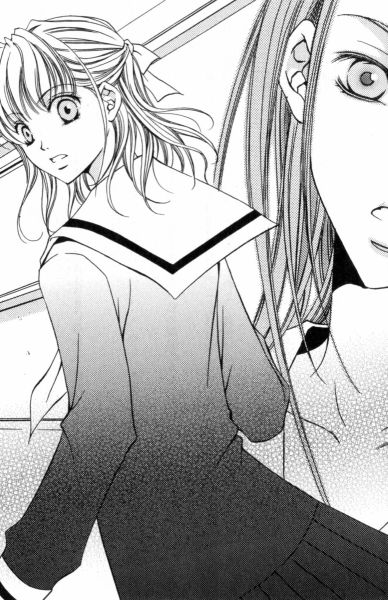

| [今野緒雪] マリア様がみてる16 | |
| 今野緒雪 | |
| (2015) | |
|
マリア様がみてる
バラエティギフト
今野緒雪
|
もくじ
バラエティギフトⅠ
降誕祭の奇跡
バラエティギフトⅡ
ショコラとポートレート
バラエティギフトⅢ
羊が一匹さく越えて
バラエティギフトⅣ
毒入りリンゴ
バラエティギフトⅤ
あとがき


マリア様がみてる バラエティギフト
「ごきげんよう」
「ごきげんよう」
さわやかな朝の挨拶が、澄みきった青空にこだまする。
マリア様のお庭に集う乙女たちが、今日も天使のような無垢な笑顔で、背の高い門をくぐり抜けていく。
汚れを知らない心身を包むのは、深い色の制服。
スカートのプリーツは乱さないように、白いセーラーカラーは翻らせないように、ゆっくりと歩くのがここでのたしなみ。もちろん、遅刻ギリギリで走り去るなどといった、はしたない生徒など存在していようはずもない。
私立リリアン女学園。
明治三十四年創立のこの学園は、もとは華族の令嬢のためにつくられたという、伝統あるカトリック系お嬢さま学校である。
東京都下。武蔵野の面影を未だに残している緑の多いこの地区で、神に見守られ、幼稚舎から大学までの一環教育が受けられる乙女の園。
時代は移り変わり、元号が明治から三回も改まった平成の今日でさえ、十八年通い続ければ温室育ちの純粋培養お嬢さまが箱入りで出荷される、という仕組みが未だ残っている貴重な学園である。
さて、秋のある日。
薔薇の館に、思いがけない贈り物が届けられた。
『可愛い妹たちへ』
付箋に走り書きされたメッセージが、「とりあえず」といった感じで、有名デパートの包装紙に貼りついている。
その文字には、確かに見覚えがあった。
左右対称に結ばれたタイのように、無造作を装いながらいつも正確で美しい、それはあの人のものに間違いなかった。
バラエティギフトⅠ
木曜日の放課後。
いつものように祐巳が掃除を終えて薔薇の館の二階に足を踏み入れると、そこには異様な光景が待ち構えていた。
「......」
見てはいけないものを見た。そう思って、開けたばかりの扉をそっと閉じかける（上手い具合に、まだドアノブから手を離していなかったしね）。──が、そこにいた人物は、こちらの気配をしっかり感じとっていたものだから、当然のように呼び止めてくる。顔をこちらに向けもしないで。「祐巳さん」と。
「ご、ごきげんよう」
見つかってしまったものは仕方ない。祐巳は、閉じかけた扉を再び開く方向に動かし、つまり、ちょっと前に自らが行った動きを取りあえずなかったことにしてから、取り繕うように挨拶をした。今日一日同じ教室で六時間学んだ相手を捕まえて、今更「ごきげんよう」もないだろうけれど。
「今、逃げようとしたわね」
その人は、そこでゆっくりと顔を動かし、祐巳を見た。
「あっ、えっ、まさか」
否定してはみたものの、それで許してくれるわけもなし。
「いーや、したね。じゃなかったら、いったいどうして開いた扉をそのまま閉める？まさかとは思うけれど、部屋に入ったつもりで自分の身体を廊下に忘れたとか？」
椅子を立ち上がって、ジリジリと詰め寄る。迫力あるアップで攻められて、祐巳はついに観念した。
「だって。怖かったんだもん、由乃さん」
「怖い？ 親友を捕まえて、何を言うの」
由乃さんは取りあえず祐巳を解放してから、首をすくめた。
「親友だろうと、赤の他人だろうと、怖いものは怖いってば」
よーく知っている人間の方がむしろ怖い場合もある。祐巳は、たった今自分の目で見たものをそのまま描写してみせた。
「まだ誰も来ていないのかと思ったら、実は、薄暗い部屋の中でテーブルの一点を見つめたまま身動き一つしないで座っている人物がいたんだよ？ドキーンってならない方が無理があるって。その上、私が入って来たことに気づいていたくせして振り返りもしないし。天気のせいもあるけれど、部屋の中には変な影がついているし。せめて灯りぐらいつけていてくれたら、私だって怯えないわよ」
「それは失礼。忘れていたのよ」
由乃さんはホント、たった今思い出したかのように電気のスイッチをパチンと入れた。
「ずっとあれに囚われていたから」
クイって、由乃さんは顎をそちらに向けてつぶやく。
「あれって、あれ？」
祐巳は、テーブルの上を指さして確認した。
部屋が明るくなったことで、わかった。さっきまで由乃さんが注視していた辺りには、四角い箱が置いてある。有名デパートの包装紙できちんと包まれた、「ご贈答」とかいう言葉がぴったりはまるような雰囲気の。メジャーがないから正確なサイズはわからないけれど、縦横三十センチ高さ十センチといったところだろうか。
「これ、どうしたの？」
箱の外観を観察していても何もわからないので、祐巳は由乃さんに質問してみた。
「ここにあったのよ」
「いつから？」
「少なくとも、五時間目以降だわね」
「ふむ」
昼休みにここでお弁当を食べた時には、確かにこんな物なかった。ということは、祐巳たちが午後の授業に出ている間か、短い休み時間か、ホームルームの最中か、掃除の時間かに、何者かがこの部屋に来てこの箱を置いていった、と、そういうわけなのだろう。
「誰が持ってきたのかな」
「ここ見てよ」
由乃さんは、箱の上部にくっついていた長方形の紙片を指さした。それはあまりに小さく、そのため祐巳は、『○日までにお召し上がりください』なんて書かれたシールかと思って見過ごしてしまっていた。だがよく見ればそれは付箋で、そこには手書きで『可愛い妹たちへ』というメッセージが書かれていたのだった。
「ね、祐巳さん。これ、江利子さまの字だと思わない？」
「ああ、そういえば──」
ってことは、これは江利子さまからの差し入れ。由乃さんが深刻だったから、「まさかこれはミステリー!?」なんて盛り上がってしまったけれど、わかってしまえば「なーんだ」ってな具合に一気に脱力。
けれど、由乃さんの顔の表情は硬い。
「どういうつもりかしら」
「どういう、って」
「体育祭でのこと、忘れたとは言わせないわよ」
「...... 妹 の件？」
島津由乃さんのお姉さまである支倉令さまの、それまたお姉さまであるところの鳥居江利子さまは、一筋縄ではいかないお方。先日も体育祭にフラリと立ち寄られたかと思えば、由乃さんに「妹を紹介する」という約束をさせたことは記憶に新しい。
しかし。
「この箱が、 妹 の件と関係あるって思ってるの？」
「ないわけないじゃない！ 相手はあの江利子さまよ。これは何かのメッセージ。さもなくば、私を陥れるための巧妙な罠」
「ふーむ」
再び空気はミステリーに傾いてきた。ただし、由乃さんが一人で盛り上がっているって感じは否めない。だって江利子さまは在学中、こんな風な包みをよく家から持ってきていたのだ。お家が商売やっているから、ご進物や手土産などをもらうことが多くて、消費しきれない分だから遠慮なくどうぞ、って。
もちろん、それは江利子さまだけではなく、薔薇の館はみんなが持ち寄ったお茶とかお菓子とかによって、快適なサロンを維持しているわけなのだが──。
「開ける」
意を決したように、由乃さんは箱に手をかけた。
「えっ、いいの？」
「いいんじゃないの？ だって、ここに書いてあるじゃない『可愛い妹たちへ』って」
「でも」
一応、令さまを待ってからの方がいいのではないだろうか。
「『可愛い妹へ』だったら私だって遠慮するわよ。令ちゃん宛だものね。でも、『たち』だもん。『皆々さま』という意味でしょ。私にも、何分の一かの開封する権利があるはず」
「そりゃ、理屈ではそうかもしれないけれど」
「だから、令ちゃんに届けたかったわけじゃない。これはきっと私宛なの」
「......めちゃくちゃな思い込み」
「思い込みでもしないと、勢いつかないでしょうが」
言葉通り、勢いを味方にして、由乃さんは箱の底に封印のように貼られていたデパートのロゴ入りシールをピリリと剥がした。シールは切り口がギザギザになっていたせいか、剥がした際に斜めに裂けてしまい、もはや箱の中身を確認したら再度封印するなんて芸当は不可能となってしまった。
それでもう後に引けなくなった由乃さんは、やけくそのように乱暴に紙を開き始めた。本当のところ、心の中の何パーセントかは、そっと元に戻しておこうと思っていたのではないかと思われる。
包装紙という衣を剥いで出てきたのは、きれいな缶だった。蓋の周りのテープを剥がして、缶を開けると──。
「......バラエティギフト？」
それは、なんてことない、ご贈答用お菓子の詰め合わせセットだった。
缶の中はいくつかに仕切られていて、クッキーに散りばめられたオレンジピールやらキスチョコレートの銀紙やら、キャンディーのカラフルな包み紙やらが、きらきらと賑やかに輝いていた。
そう。
まるでアクセサリーボックスか、クリスマスツリーのように。
降誕祭の奇跡
＊
ねえ、奇跡って信じる？
目をキラキラと輝かせて、少女が問う。
一瞬、世界がグラリと傾いだ。
それは、十数年前に見た光景がデジャブのように今の映像に覆い被さったせい。赤とか青とかが少しだけずれて印刷された雑誌のカラーページを見ているうちに、乗り物にのってもいないのに酔ってしまうような、それに近い感覚で気持ちが悪い。
「先生、聞いてるの？」
「ああ、ごめん」
鹿取真紀は軽く首を動かして、十数年前の幻を振り払う。そうして残ったのは、紛れもなく現の光景だ。いつもの雑多な職員室。彼女の机の脇には、さほど長くない髪を、いつも編み込みしてすっきりとまとめている、人なつっこそうな瞳の少女が一人。
「奇跡か。......お目にかかったことないからなぁ」
眺めていた出席簿を閉じて、真紀は答えた。期末試験の前日から病気欠席していた生徒が本日復活し、彼女の受け持つクラスも全員揃って終業式を迎えられたのだった。
「先生。質問と答えが、微妙にずれてる。国語のテストだったら、○もらえないよ」
「ははは。さすが、黒須さん。するどい突っ込み」
奇跡を信じるかという質問に対する答えは、イエスかノーである。だが真紀は即答できず、誤魔化したのだ。だから「微妙にずれている」のではなく、「微妙にずらした」が正しい。
仕方ないなぁ、というような顔をして少女は笑った。
「じゃ、あって欲しいと思う？」
黒須ひかり。真紀が担任をしている、二年菊組の生徒だ。
「そうね。あったらいいのに、って思ったことは何度かあったかな」
顔など全然似ていないのに、と思った。けれど、どうしてか面影が重なる。生涯忘れることのない、あの少女に。
「じゃ、先生に奇跡の話をしてあげようか」
「イエズス様が起こした奇跡？」
「違う。私の上に起きた奇跡」
「おや、まあ」
それはそれは、と真紀は肩を揺すった。こんなに身近なところに、奇跡が転がっていたなんて、と。
「先生だから、特別に教えてあげるんだからね。誰にも内緒よ」
「見込まれたものだわ」
「うん、だって。先生だけよ。入試の面接で、私の話を笑わずに聞いてくれたのは」
「そうだっけ」
「そうよ。忘れたの？」
「いっぱい面接したからなぁ」
真紀は伸びをしながら答えたが、それは嘘だった。彼女のことは、覚えている。いっぱい面接したのは本当だが、その中でどんな内容の話をしたのかまで覚えている生徒は、まれだった。
『夢で会った人と、リリアンで再会しようと約束したんです』
あの時黒須ひかりは、リリアン女学園を受けた理由をそう語ったのだった。
ひかり
言ったところで、信じてくれる人はあまりいないけれど、私は夢の中で会ったお姉さんを捜して、リリアン女学園の中等部に入学した。
小学六年生の十二月半ば。童謡、クラシック、ポップスと、街には各種クリスマスソングが折り重なるように流れ、赤と緑と金と白という定番カラーがあらゆる場所に氾濫しているという、例年だったらわくわくと心弾む季節。私は大学病院の庭に植えられたあまり高くない樅の木のイルミネーションを、病室の窓からため息混じりに眺めなければならなかった。命に関わるものではない、簡単な目の手術を受けるために入院していたのだ。
明日はいよいよ手術という晩、消灯直前まで私に付き添っていた母が帰ると、私は慣れない病院のベッドで一人泣いた。
「あまり泣くと目が腫れてしまうでしょ。そうしたら手術がやりにくくなるわよ」
そういう看護師さんの忠告は、ますます私の涙に拍車をかけた。
「ひかりちゃんはもう十二歳なんだから。泣いたってどうにもならないんだってわかってもいい歳じゃない」
泣きやまない患者を持てあました若い看護師は、大きなため息を一つつくと、気休めのように私の瞼に氷嚢をあてがい、ベッドをぐるりと取り囲むカーテンを引いてナースステーションに戻っていった。
泣いたところで、どうにもならないことくらいわかっている。お医者さんが丁寧に状況を説明してくれて、自分でも納得して手術を受けることに決めたのだ。だけど、理性とは別のところで感じる「怖い」という感情は、成功率が高いとか、手術の時間が短いとか、そんな過去のデータを示されたところで、簡単に振り払えるものではなかった。
「そんなことくらいわかっているよね」
その時、どこかで声がした。さっきの看護師さんとは別の、でも若い女の人の声。中学生か高校生だろうか。声の感じでは、私より少しだけ上ではないかと思われた。
「わかっていても、どうすることもできないことだってあるもの」
「誰？」
暗がりに向かって、私は尋ねた。
「キョウコよ」
「キョウコ？」
「夕方ここに入院してきたの。具合が悪かったから、同部屋の人たちに挨拶もできなくて......」
夕方、入院してきた人なんていただろうか。
私は氷嚢で瞼を冷やしながら首をひねった。ここは六つベッドがある大部屋で、廊下から中に入って左手の手前から二つ目、つまり真ん中が私のベッド。左隣はちょっと耳の遠いお婆ちゃまで、右隣は小太りの中年女性である。お向かいが、美人だけどいびきがすさまじい三十歳くらいのＯＬさんで、その隣の窓際のベッドがバイクの事故で足を骨折した大学生のお姉さんだ。
ということは、私から見れば斜め向かいの、廊下側の空きベッドに新しい人が入院したということか。──にしては、声が近くで聞こえる。
「キョウコさん。すぐ側まで来てくれているの？」
「いいえ。私、さっきも言ったけど、具合が悪くて。......お腹が痛くて動けないのよ」
「お腹？」
「そう。盲腸が腫れててね。手術、明日するの」
「あ、私も。明日、目の手術」
「ええ。看護師さんとの話、聞こえてた。だから仲間発見、って感じでつい声をかけちゃったのね」
「仲間？」
「そうよ、手術仲間。私、お腹を切るのは怖いけれど、ひかりちゃんが別の手術室でがんばっているんだって思ったら我慢できそう」
「私も。私も、つらくなったらキョウコさんのこと考えることにする」
お腹を切るのと目にメスを入れるのと、どちらが大がかりな手術かなんてわからないけれど、手術するのが一人じゃないって教えられたら急に目の前が明るくなったように感じられた。この瞬間、私は孤独ではなくなったのだから。
私たちは、すぐにうち解けて友達になった。
「ひかりちゃん。学校楽しい？」
「あんまり」
「あら、なぜ？」
「来年受験だから、今みんなイライラしていてまとまりがないんだ。この時期に私が入院したことも、きっと内心喜んでいると思う」
ほんの少し年上で、うちの学校とは無関係の人だからだろうか、私は親にも言わないことまでキョウコさんにならしゃべることができた。
「ふーん。ひかりちゃんて、優秀なんだ」
「どうして？」
「学力の低い人が、勉強できない状況に陥ったところで、自分にあまり影響ないものでしょ。クラスの人は喜ばないわよ」
「そうか。そうだね」
確かに私の成績はクラスで一番で、一番を死守するために必死だった。本当のことをいえば、先頭きってイライラしている張本人が私。当然、お見舞いにきてくれるような友達一人いなかった。
「私の学校はね、結構楽しいわよ」
「え、キョウコさん、どこの学校行ってるの？」
「リリアン女学園。知ってる？」
「リリアン？ 聞いたことあるけど」
確か、すごくレベルの高い学校だった気がする。私が受けようとしている第一志望より、さらに一ランク上の。
「キョウコさんこそ、優秀なんじゃない」
「それがね、制服着たくてガリ勉して滑り込んだの。でも、入ってみたら、それほど勉強漬けの学校でもなかったわ。カトリックの学校だから、行事なんかたくさんあって楽しいし」
「クリスマスとか？」
「そう。もうじき、クリスマスね。それまで退院して、終業式に間に合いたいな」
そしてキョウコさんは、彼女の通う学校のことをいろいろと私に教えてくれた。
構内に建つ、お聖堂の美しさ。
薔薇さまと呼ばれ生徒たちに慕われている三人の上級生と、彼女たちが仕事をする薔薇の館という古い建物。
パンの注文の仕方。ミルクホールの上手な利用法。
キョウコさんの声に導かれ、私はまだ行ったことのないリリアン女学園の中庭を散歩し、教室を覗き、マリア像に手を合わせるのだった。
中でも私が一番興味をそそられたのは、姉妹制度だ。それはリリアンの伝統ある制度で、一対一で上級生が下級生の指導をするものらしい。
「すてき。私、キョウコさんの妹になりたい」
「いいわ。じゃ、約束。私は今二年生だから、来年は三年生だけど、二学年違う姉妹もいないわけではないし。一緒に過ごす一年間を充実させればいいんだわ」
私は最初、軽い気持ちで「妹になりたい」と言ったのだけれど、キョウコさんは一人でどんどん盛り上がり、先へ先へと計画を立てていく。姉妹の契りをむすぶアイテムであるロザリオの石はどんな色がいいか、とか。バレンタインデーにはこんなチョコレートが欲しい、とか。
「でも......。入れるかな、リリアン」
私はつぶやく。現実問題として、そこのところが一番肝心な、外せない部分なのである。けれど、キョウコさんは笑った。
「大丈夫。きっと入れるわよ。そんな予感がする」
「そうかな」
「リラーックス、リラーックス。日頃から優秀なひかりちゃんなら、落ち着いて臨めば楽勝よ。案ずるより産むが易し、っていうでしょ？手術だって、きっと思っていたより呆気ないはずよ」
「うん」
「......というポジティブシンキングは、私のクラスメイトの受け売りだけどね」
「クラスメイト？」
「うん、すごく明るいの。未来の見えない部分とか、絶対にいい方に転がるはず、って信じちゃえるのね。それで本当に実現させちゃう。でも、あれって彼女のそういう性格が、運を引き寄せるんじゃないのかな」
「その人、キョウコさんのお見舞いに来る？」
「来ないと思うよ。そんなに親しくないし」
それに急に手術することになったから、まだ担任の先生にしか言ってないらしい。
「その人にだけでも、言ってくればよかったのに。そうしたら、思い切り励ましてもらえたよ」
「ああ、そうね。......本当に、その通りだわ」
その時私は、キョウコさんはその人のこと好きなのかな、って何となく思った。
看護師さんの見回りの懐中電灯が病室に入ってきたので、私たちの話はそこで中断した。
やがて、おしゃべりで気持ちがほぐれたせいか、氷嚢が腫れた瞼を気持ちよく冷やしてくれたお陰か、私にトロリとした睡魔が訪れた。今晩は眠れないか泣き疲れて眠りにつくかどちらかだと覚悟していたのに。こんなに心安らかに眠りにつけるなんて。
私はキョウコさんの手術が無事に済みますようにと、神様にお祈りして目を閉じた。
自分のことを頼むのは、すっかり忘れて。
翌日、私は午前中からの手術だったため、朝起きるとバタバタと準備させられ手術室に連れて行かれた。
私よりもっともっと小さい、つまり幼児とか小学校の低学年とかだと、迷わず全身麻酔になるのだそうだが、大人とも子供ともいえない小学六年生の私に対し、医師はどちらでも好きな方を選んでいいと言った。それで私は、全身麻酔を選択した。
もちろん、局部麻酔の方が身体への負担は軽くて済むのだが、手術場所が目である場合、痛覚が麻痺しているだけで眠っているわけではないから、手術の模様は逐一見えてしまうという欠点が伴う。メスとか縫合する針とかが目の中に入ってくるのを直視するなんて、私にはとても耐えられそうもなかった。
というわけで、私の手術は全身麻酔で眠っている間に滞りなく済み、その日のうちに大部屋に戻ってきた。
「キョウコさんの手術は成功した？」
自分のベッドに横たわっての、私の第一声はそれだった。
「キョウコさんって、どなた？」
付き添いの母は、私の頭を撫でながらやさしく聞き返す。
「あのね、向かいの列の廊下側の人。昨日入院してきたんだって。今日、盲腸の手術だったの」
「そうなの」
母は、椅子を立って私のベッドから離れ、数歩あるいて帰ってきた。一、二、三、四......、全部で七歩。ガーゼで覆われた目を補うかのように、私の耳は敏感になっていた。
「そのベッドね。カーテンが開いていたので見てみたけれど、誰もいらっしゃらないわよ」
「じゃ、まだ手術しているのかな」
盲腸の手術はどれくらい時間がかかるものなのか、わたしにはわからなかった。しかし、キョウコさんの手術が何時から始まったのかすら知らないのだから、手術に要する時間の平均を知ったところで、あまり意味はない。手術してしばらくは、ナースステーションの側の個室で経過を見る、なんてこともあるらしいから、もしかしたら今日はこの部屋に戻ってこないかもしれない。
「どうかしらね。あとで看護師さんに聞いておいてあげましょう。だから、もう少しおやすみなさい。次に目が覚めた時には、きっと何かわかっているわ」
「うん」
そして私は、再び深い眠りについたのだ。
次に目覚めたら、キョウコさんは帰ってきているといいな、と思いながら。
しかし、目覚めてみても、キョウコさんには会えなかった。
「夢をみたのよ、ひかりちゃん」
歪んだ顔で、母が笑った。主治医の先生が私の目を覆っていたガーゼをはずしていった後で見る景色は、いつもと違って、物が何でもひしゃげて見えた。
「婦長さんに聞いてみたけれど、あのベッドはひかりちゃんが入院する前日から空きベッドなんですってよ」
「じゃ、他のベッドは」
「キョウコさんという方はいらっしゃらないわよ」
私はサイドテーブルとかドアとかにぶつかりながら廊下に出て、入り口に取り付けられたプラスティックボードの名前を確認した。すると、母が言うように、キョウコという名前は一人もいない。私が入院してきた時にすでにいた人たちの名前ばかりが、看護師さんの走り書きで書かれているだけだ。
「でも、でも、確かにっ」
キョウコさんは、この部屋にいた。手術を怖がって泣く私を慰めるために声をかけ、姉妹の約束をしたのだ。
「入院患者さんの名前を当たるにしても、苗字がわからないんじゃ調べようもないでしょう」
母は廊下でしゃがみ込んだ私を立たせ、抱えるようにしてベッドに戻した。
「夢なんかじゃないわ」
私にはわからなかった。
どうして、こんなことになったのか。私が深い眠りについたその間に、世界がひっくり返ってしまったとしか思えなかった。
しかし、一日、二日、三日と時間が経過するうちに、夢ではないという自信も徐々に薄らいでいった。次第に回復してはっきりと物の輪郭が見えるようになると、手術後はじめてガーゼをとった時に見えた、歪んだ景色を、思い出すことができなくなってしまったように。キョウコさんが見つからずに過ぎていく日々が積み重なっていくにつれて、あれはやはり現実ではなかったのだろう、と思えるようになってきたのだ。
カーテンをぐるりとめぐらし、仕切られたベッドは、たとえお隣同士でさえ、声を張り上げなければ会話は成立しない。けれど、キョウコさんも私もベッドに横たわりながら、普通にしゃべっていたという矛盾。
私以外に、キョウコさんに会った人はいない。私自身、声を聞いただけで姿を見てはいないのだ。
現実ではないものをひっくるめて夢というのなら、あれは夢だった。けれど私は、ただの夢として片づける気持ちにはとてもなれなかった。
「私、リリアン女学園受けたい」
退院して間もなく、私は両親にそう告げた。
今になって志望校を変えるなんてばかげている。十分わかった上で、私はリリアン一本に絞って勉強をはじめた。不合格なら公立の中学へ行って、三年後リリアンの高等部を受け直そうと思った。リリアン以外には行く気になれない。キョウコさんとのことに何らかの意味を与えてやるためには、私が約束を守ってリリアンの生徒になるしかないと思ったのだ。
もしかしたら、キョウコさんが待っていてくれるのではないか。キョウコさんはどこかでちゃんと実在していて、あの日二人は夢の中で会ったのかもしれないから。
無謀だと諫めた担任教師のあきれ顔やクラスメイトたちの冷笑をよそに、私はリリアン女学園の中等部に合格した。難関のリリアンに合格したと母は得意げだったが、私にはクラスで一番をとった時のような勝ち誇った気持ちはなかった。私にとってリリアンは、ただ、キョウコさんに会うために入らなければならない学校だっただけ。ブランドとしての価値はない。
入学してすぐに、私はキョウコさん探しを始めた。現在三年生で、去年の十二月にしばらく欠席していた「キョウコ」という名前の生徒。今年度の三年生の教室を訪ねたり、昨年度二年生の担任だった教師に話を聞きにいったり、掲示板の自由コーナーに探し人の紙を貼りだしたり。そんな私の姿は、かなり滑稽だったはずだが、リリアンの教師は「何かやっているな」といった感じであたたかく見守ってくれる。クラスメイトの中には、おもしろがって手伝ってくれる人たちもいた。
四月の終わり頃だっただろうか、放課後の教室でチラシを作成していた私に、クラスメイトの小笠原祥子さんが声をかけてきた。彼女は幼稚舎、初等部を経て中等部に上がってきた生徒で、同世代の女の子の目から見ても近寄りがたいほどの美少女だった。
「ひかりさん。夢で会った方を探していると、お聞きしたけれど......」
祥子さんは、私の作りかけのチラシの原稿を摘み上げた。学校帰りに習い事でもあるのか、鞄以外にも大きな手提げ袋を肩から提げている。
私は、祥子さんに直接例の話をしたことはなかったが、入学して一ヶ月、私のキョウコさん探しを知らないクラスメイトはいなかった。
「姉妹の約束をなさった、とか」
「はい」
何か情報をくれるのかと、私は元気よくうなずいた。すると祥子さんは、ちょっと呆れたような顔をしてため息をついた。世話が焼けるわね、といった感じだ。
「中等部に姉妹制度が存在しないの、ご存じではないの？」
「えっ」
「リリアンの伝統みたいに言われているけれど、姉妹制度があるのは高等部だけなのよ。だから」
だから。
「念のため、高等部の三年生を当たってみたほうがいいのではないかしら、とお教えしようと思って」
それだけ言い終えると、祥子さんは「ごきげんよう」と素っ気ない挨拶を残し、腕時計を気にしながら教室を出て行ってしまった。
小走りで去っていく足音を聞きながら、私は彼女の親切なアドバイスにお礼を言うことも挨拶することも忘れて、ひたすらキョウコさんとの会話の内容を思い返した。
私は、ちゃんと中学受験だと言っただろうか。
キョウコさんはリリアンの二年生だと言った時、中等部とか高等部とかまで触れていただろうか。
思い出せない。
二つ違いと思っていたキョウコさんは、五つも上のお姉さんだったのかもしれない。そこまで考えて、私は愕然とした。もしそうだとしたら、同じ時期に高等部に在籍できない私たちは、永遠に姉妹になれないのだった。
「去年のクリスマスの直前、盲腸で入院した生徒をご存じありませんか」
けれど私は、高等部校舎にも足を運ぶようになった。姉妹にはなれないかもしれない、それでもやっぱり私はキョウコさんには会いたかった。
だが、キョウコさんはそこにさえいなかった。
私には、もう探す場所さえなくなってしまった。
そして、いつしか私は、あの時のキョウコさんがそうであったと思われる高等部の二年生になってしまった。
五年も経てばさすがにもうキョウコさん探しはしていないけれど、未だにキョウコという名前に出会うと複雑な気持ちになる。キョウコという名前は珍しくないから、クラスに一人や二人はその名前の主がいる。リリアンは下の名前で呼び合うから、「キョウコさん」という声が聞こえてくるたびドキッとする。まるで挙動不審者だ。
高二で初めて同じクラスになった三田今日子さんもキョウコさんで、私が「キョウコさん」に反応するからだろうか、しょっちゅう目が合う。彼女は高等部からリリアンに入学してきた才女である。本人は「まぐれ」とか言っているけど、高等部に外部から入るのは中等部から入るのより数倍難しいということは誰もが知っていることだった。
今日子さんは、物静かで穏やかな人だ。華道部に入っていて、部活で余った花を小さな花器に活けては、教室を飾ってくれている。
「今日子先輩はいらっしゃいますか」
後輩の面倒見がいいようで、華道部の一年生がよく教室を訪ねてきた。けれども、彼女には未だ妹はいない。
「今日子さん、妹作らないの？」
ある日、クラスメイトの一人が、私がいつも不思議に思っていたことを今日子さんに尋ねた。
それは理科室からの帰り道の、たわいもない雑談。私と今日子さんは、その日はたまたま同じ班で実習していたから、その流れで一緒に行動していた。
「あら、それを言うならひかりさんだってそうよね」
困った今日子さんは、私を仲間に引き入れた。まとまって歩いていた四人の中で、お姉さまも妹もいないのは、私と今日子さんだけなのだ。
「ひかりさんは心に決めた方がいるの。その方以外とは、姉妹になるおつもりがないそうよ」
横から支倉令さんが出てきて、からかうように説明した。 黄薔薇のつぼみである彼女には、優等生のお姉さま、そして可愛い妹がいる。
「心に決めた方がいらっしゃるの？」
「ええ、夢で会った方」
今日子さんの質問に答えたのは、またもや令さんだ。中等部から上がってきた令さんたちは、当然ながら私の夢物語を知っていた。私が必死にキョウコさんを探し求める姿を、オンタイムで見ていたのだ。
「夢？ 夢って、眠っている時にみるあの夢？」
「笑ってもいいわ。私、いつか会えると信じているの。十年後でも二十年後でもいい、また夢の中でもいい。会えた時に、成長した私を見て欲しい。できれば好きになってもらいたいの」
今日子さんは笑わなかった。
「うん。何となくわかる。......わかるわ」
今日子さんは、私が今一番して欲しかった顔をしてうなずいてくれた。私は、それでますます今日子さんに興味をもったのだけれど、それから間もなく彼女が学校を休んでしまったので、仲よくしたくてもできなくなってしまった。
＊ ＊
「──で？」
高校教師鹿取真紀は、ボールペンの蓋で頭をかきながら尋ねた。
「前回までのあらすじはわかったけど。肝心の奇跡は？もうそろそろ出てくる？」
かれこれ二十分は話し込んでいる。長くなるようなら、帰り支度して道すがら聞こうかと思ったのだ。確か黒須ひかりは、真紀と同じＪＲ線のＭ駅を経由して帰るはず。
「さっき、ね」
ひかりはニッコリと笑った。
「え？」
「さっき起こったところ。先生。何か感じない？」
「何が？」
「三田今日子さんの病欠に関するデータ。もちろん把握していますよね」
「三田さんの？ 当たり前じゃない。私は担任よ」
期末試験の前日の夕方、自宅にて腹痛を訴えて入院。試験期間と試験休みすべて休んで本日やっと復活。
「病名は？」
「虫垂炎」
「別名」
「......盲腸」
つぶやきながら真紀は、全身に鳥肌がたつのを感じた。
「先生の中でどなたか、高等部二年生のクリスマス直前、盲腸で入院した生徒をご存じありませんかー」
ひかりは、まさに四年と七ヶ月前にこの職員室で部屋中響き渡るくらいの声で呼びかけたあの言葉を、真紀一人に向かって再現した。
「まさか」
「その、まさか。だったら、奇跡って言えるでしょう？」
「三田今日子が、あなたの......？」
「ええ。だって、今日子さんが、今朝会うなり私に言ったんですもの」
黒須ひかりは、玉手箱の蓋をそっと開けるかのように、丁寧に言葉を紡いだ。
「ひかりちゃん、って。ひかりちゃん、リリアンは楽しいでしょう？って。それから、目の方はもう大丈夫なの、って続けて。変でしょう？五年も前のことなのに。でもキョウコさんの中では、たった数日前の出来事だったの」
本当ならば、それは本当にすごい奇跡だろうに、黒須ひかりは当たり前のことが起こっただけのようにさらりと言った。
「私、今最高に幸せ。高二のキョウコさんと小六の私のままだったら、姉妹にさえなれなかったのに。クラスメイトになれたなんて。夢のようだわ」
「本当だ」
うなずいてはみたものの、にわかには信じられなかった。
信じられなかったが、これがすべて、黒須ひかり一人の作り話とは思えなかった。三田今日子が、クラスメイトの妄想に話を合わせたとも考えにくい。
「先生」
まるで心の中を読んだみたいに、ひかりが言った。
「奇跡は、信じなければそこにあっても見過ごしてしまいますよ。積極的に拾わないと」
その言葉は、お聖堂の鐘の音のように、いつまでも心の中に余韻を残すのだった。
奇跡を語り終えた少女が去って、ガランとした職員室に取り残された真紀は、急に黒須ひとみの夢に取り込まれてしまったような錯覚に陥った。
ここは現実の世界なのだろうか。
そもそも、黒須ひかりなる人物は存在しているのだろうか。
そう考えだしたら居ても立ってもいられくなって、出席簿を開いて確認した。
「黒須ひかり、......三田今日子」
ちゃんとある。
私はいったい何を考えているのだろう、と思って席を立つ。その時うっかり出席簿をぶつけてしまい、机の上に置いてあった小箱が落ちた。
「ああ、大変」
真紀はあわてて拾い上げる。
箱の中から飛び出した天使のマスコットが、今年も静かに語りかけてくる。
ね、奇跡って信じる？ ──と。
真紀
「ね、奇跡って信じる？」
小さくて色白の少女が囁く。
「ごきげんよう」
私は、誰に向けてでもないけれど、そう告げて鞄を引っかけた。
期末試験の最終日。クラスメイトたちは試験の出来不出来よりも、試験休みと冬休みの予定、それからクリスマスのことが気になるようで、ホームルームはとっくに終わっているというのに、なかなか帰らず、教室のあちらこちらで群れておしゃべりに熱中していた。
私は、年末年始に何をするかなんて誰かに伝えたいとも思わなかったし、誰かの予定もさして興味がなかったので、荷物をまとめ終えると、早々に帰ることにしたのだった。
「あ、ちょっと待って真紀さん」
「はい？」
呼び止められて振り返る。すると、教壇付近でたむろしていた、数人のグループが私に向かって手招きしていた。
「何かしら」
お腹が空いたのに、と思いつつも私は、元来た道を引き返してクラスメイトたちの輪の中に入る。
「あのね。真紀さん、社会科の渥美先生のことどう思っていらっしゃる？」
クラスメイトの一人が、唐突に言った。
「どう、って？」
質問の意図がわからず、私は聞き返した。すると、返ってきたのは。
「つまりお好きかしら、って質問」
──であった。
「好きか嫌いかという二者選択？」
「違う、違う。渥美先生にラブか否かといった類の話」
「ラブぅ!?」
少なくとも、好感度調査のアンケートではないらしい。それにしても、ラブって......。
「授業は面白いから好きだけど、そういう感情はないなぁ」
私は、短い髪をかきながら答えた。渥美先生に関しては個人的にいろいろ思うところはあるのだが、今聞かれているのはそういうことではないようなので言わずにおく。
「そう。だったら、お誘いしても無駄だわね」
「いったい、何なの？」
素直に質問に答えた私には、知る権利くらいあるはずだ。すると、一人が「実はね」と声を潜めた。
「ほら、終業式の日はクリスマスイブじゃない？放課後、みんなで一緒に職員室に行って、渥美先生にプレゼントを渡しましょう、という相談をしていたところだったのよ」
「みんな、って？」
「ここにいるみんな」
「ははあ」
私は、ぐるりと眺めて納得した。
一、二、三......全部で八人。さほど共通点のなさそうな彼女たちは、どうやら「渥美先生にラブ」という括りで集まった面々らしい。
「渥美先生ねぇ」
「あら、真紀さん。何か言いたげ」
「いや、別に」
私は首をすくめた。
「渥美先生は素敵じゃないの」
「我が校には珍しく、若くて格好いいし」
「二十代の男性教師なんて貴重よ、貴重。それなのに、平均点以上のルックスで」
クラスメイトたちは目をとろんと潤ませて、口々に言う。
「......ですか」
ま、反論する気などない。同世代の男子がいない分、女子校では疑似恋愛は盛んだから。教師しかり、同性の先輩しかり。
「そう。というわけです。で、真紀さん、この計画に乗るの？乗らないの？」
どうやらさっきの、一緒に職員室に行って云々という話は、まだ終わっていなかったらしい。
「どうして私が渥美先生にプレゼントをあげなくちゃいけないかなぁ。逆にもらいたいくらいだわ」
「何で、先生が真紀さんにプレゼントをくれるわけ」
クスクスと、クラスメイトたちから笑いが漏れる。
「......確かに。とにかく、私は数に入れなくていいから」
私は苦笑して手を振ると、今度こそ教室を出ていった。
廊下を十歩ほど歩いた頃だろうか、たった今私が閉じた教室の扉がガラガラと開閉して、一人の生徒が飛び出してきた。そして小走りで私に駆け寄ると、顔をのぞき込んで言ったのだった。
「一緒に帰りましょう」
安倍美嘉さん。クラスで一番小さくて、一番色白で、一番やせていて、子鹿のような瞳の、守ってあげたくなる典型のような女の子。プラス、渥美先生ラブの八分の一。......これは、さき程判明したのだが。
やれやれ。
私は立ち止まり、美嘉さんから鞄と手提げを取り上げた。私をあわてて追いかけてきたのであろう、抱えたスクールコートと鞄と手提げ袋は、今にも手から落ちてしまいそうだ。
「真紀さんて、やさしいわよね」
両手の開いた美嘉さんは、ゆっくりとコートを着て、それから「ありがとう」と私の手から自分の荷物を受け取った。
何て答えていいかわからず、私は背を向けて先に歩き出す。
コートを着ている間に鞄を持っていてあげるくらいのことは、誰でもすることだった。それをやさしい、って。美嘉さんは、少々大げさなのだ。
「告白してどうなるっていうのよ」
図書館の脇を並んで歩きながら、私は尋ねた。
「どうなる、って。......そうね、告白すればこちらが好きだってことをわかってもらえるわね」
美嘉さんは、おっとりと言葉を返した。吐き出された白い息が、美嘉さんの柔らかそうな髪にそっと触れては消えていく。
「わかってもらえれば、それでいいわけ？」
「その上で、相手が自分のことを好きだったら、おつきあいしたり」
「おつきあい？ そんなこと、できるわけないじゃない！」
私は声を張り上げて否定した。隣の男子校の生徒とか、お兄さんの友達とかならともかく、美嘉さんが告白しようとしている相手は、同じ学校の教師なのだ。
「そうかな。でも、過去には先生と結婚した卒業生もいたって」
「それは一握りの幸運なカップルよ。誰にも気づかれないようにしてつきあっていたか、卒業するまで待ってから告白したか。だから美嘉さんだって、あと三ヶ月待つべきなのよ」
「三ヶ月ね......」
曇天の空を見上げて、美嘉さんがつぶやく。私は、若い娘にありがちな移り気という性質が、美嘉さんの恋の熱をさましてくれることを期待していた。
「そんなにも待てない、かな」
独り言のようにそう言った後、美嘉さんは手を合わせて目を閉じた。話に夢中になって気がつかなかったが、いつの間にか二人はマリア像の所まで来ていた。
リリアン女学園に通う者としての当たり前の習慣だから、私も倣って手を合わせる。しかし、心の中ではマリア様のことなど放ったらかしで、今聞いた言葉の意味を一人反芻している。
そんなに待てない。それは、いったいどういう意味なのだろう。
急に怖くなって、私は目を開けて辺りを見回した。先にお祈りを終えた美嘉さんは、私の斜め後ろにちゃんといる。
「どうしたの、真紀さん......？」
こんな目で見られると、私はどうしていいかわからなくなる。美嘉さんが寒い日の息のように一瞬のうちに消えてしまったのではないかと思った、なんて言えるわけもない。言った瞬間、魔法がとけて、本当に何かが美嘉さんのことを連れ去っていってしまいそうな気がした。
それから二人は銀杏並木を歩き、門を出てバスに乗り、Ｍ駅で分かれたのだが、その間渥美先生関連の話は一切せず、たわいない話ばかりをしていた。クリスマスケーキのこととか、商店街の偽サンタのこととか、そんなこと。
「よっ。鹿取」
最寄り駅の駅前で、私は背後から声をかけられた。振り向けば、そこには車からにこやかに手を振る男の人。
「......渥美先生」
「今帰り？ 乗って行けよ」
ゆっくりと私の脇に停車し、助手席のドアを開けようとする渥美先生。
「結構です。家族以外の男性と密室で二人きりになってはいけません、というシスターからの教えがありますから」
「そっか。うん、そうだ。そのくらい堅い方がいい」
冗談めかして言ったつもりだったのに、意に反して優等生っぽく響いたのが気にくわなくて、私はあわててフォローをした。
「嘘よ。その先の本屋さんで、問題集を見ていきたいの」
「あ、真紀ちゃんは受験生だっけ」
鹿取と真紀ちゃん。
渥美先生はどの辺りに境界線をひいて、私を呼び分けているのだろう。
「大変だなぁ。リリアン女子大に優先で行けば楽なのに」
「それで？ 大学卒業したら、教師と結婚するの？」
「はははは」
幸福そうな照れ笑い。その陰で、近い将来、何人かの生徒が泣くであろうことも知らない、渥美先生は罪深い人だ。
考えているうちに何だか無性に腹が立ってきて、私はにやけた男を冷たく追い払う。
「早く行けば？ お父さんとお母さん、待ってるよ。結納の日取りとか何とか言ってた」
「そうか、なら急がなくちゃな。鹿取、ゲーセンなんかに寄るんじゃないぞ」
去っていくピカピカの新車を見送って、私はつぶやいた。
「ふん、教師面しちゃって」
脳天気な渥美先生。人の気も知らないで。
お陰でこっちは、一時間くらい本屋さんで時間をつぶさないことには、とても帰る気になんてならないのだった。
美嘉さんのお母さんから電話がかかってきたのは、試験休みの五日目のことだ。
「安倍でございます。突然お電話差し上げまして......」
聞いたことのない、大人の女性の声。最初は誰だかわからなかった。美嘉さんの苗字が安倍だということは頭に入っていたけれど、まさかお母さんから直接私に電話がかかってくるなんて考えもしないことだったから。
「ぶしつけなお願いで申し訳ないのですが、真紀さんに来ていただきたい場所があって」
「はい......？」
美嘉さんのお母さんが言うことには、美嘉さんは二日ほど前から体調を崩し、大事をとって入院したのだそうだ。それで退屈しているから見舞ってくれないだろうか、と。
入院と聞いて、私はすぐにコートを引っかけ家を出た。
教えてもらった病院は、私の家からバスで十分ほどの、比較的近い場所にあった。
「なあに、お母さんが知らせたんですって？」
個室のベッドの上で、美嘉さんはほほえんで私を迎えた。少しやせたかな、といった感じは受けたが、入院するほど具合が悪そうには見えなかった。
「風邪なの？」
生来頑丈にできている私は、あまり病名に詳しくない。だから体調を崩したと聞けば、イコール風邪だと思い込む。
「ちょっと、疲れがでちゃったみたい。大丈夫よ。うつる病気じゃないから」
「そんなこと考えてなかったけど」
商店街の花屋さんで買った淡いピンク色の薔薇一輪を手に、私は美嘉さんに歩み寄った。花屋に入ったこともない私が、真剣に悩んで初めて買った花。美嘉さんをイメージしたつもりだった。
「......疲れ、って？」
「ここのところ、少し根を詰めちゃったからかしらね」
ほら、とめくられた掛け布団の下から現れたのは、裁縫箱であった。
「なっ......！」
「お母さんには、内緒よ。うるさいから」
人差し指を一本、唇の前に立てる美嘉さん。
「お母さんじゃなくても、うるさく言うわよ。布団の中でお裁縫するなんて、どうかしている」
針やハサミが身体に刺さったりしたら。考えただけでもぞっとする。
そんな私の、結構きつめの注意など右耳から左耳に流し、美嘉さんは笑って裁縫箱の上にちょこんとのった物を差し出した。
「もうすぐできるの」
それはフェルトで作られた、天使のマスコット人形だった。
髪は黄色い毛糸、服は白いレースのハンカチ。頭上の輪っかは浮かせるのが難しかったのか、孫悟空のように頭にはめ込まれている。目は黒のボタン、鼻と口は刺繍糸でステッチ。白くて小さくて、とても愛らしい。その顔は、どことなく美嘉さんに似ていた。
「車の中に飾るのに、丁度いい大きさね」
「でしょ？」
それだけの会話で、私たちはそれが渥美先生へのプレゼントだということを了解し合えた。渥美先生が最近車を買って、念願の自動車通勤をはじめたのは有名な話だったから。
「ね、奇跡って信じる？」
美嘉さんが、天使の頭を撫でながら言う。
「天使はね、奇跡を運んできてくれるの」
「奇跡って、何を？」
「さあ」
美嘉さんは、具体的には何も言わなかった。だが、思い浮かべているのは渥美先生とのことかもしれなかった。
「奇跡って、なかなか起こらないことが起きるから奇跡なんじゃないの」
何に対してかわからないけれど、私は少しだけイライラしてきた。
「でも。奇跡、って言葉が存在するのは、この世に奇跡があるからだわ」
美嘉さんは反論する。
「そうかしら」
病人相手に、口論することもないのに。どうしてか、止められない。私は、感情をコントロールできない自分自身に戸惑っていた。
「でも、あるのよ」
カッカしてきた私とは反対に、美嘉さんは静かな湖面のような穏やかな表情で断言した。
「私ね、以前風邪をこじらせて死にかけたことがあるの」
それは、六年も前の出来事だった。季節はちょうど今くらい。街にはクリスマスソングが流れていたという。
「でね、その時天使が現れて、かわいそうにって私の頭を撫でたの。こんな小さいのに、連れていかなければならないなんて、って」
「天使が？」
「そう」
美嘉さんは真顔でうなずいた。
「だからね。私、その手を夢中で掴んで、お願いしたの。もう少しだけ、生きさせてください、って」
「もう少し？ 漠然としているのね」
どうしてもっと長く期限をきらなかったのか、と私は思った。どうせ頼むなら、あと五十年とか、百年とか言えばいいものを。けれど、美嘉さんは首を横に振る。
「奇跡は『無理なお願い』でしょ？ あまりに無茶なことは、頼んだってきっと叶わないわよ」
で、美嘉さんが謙虚だったために天使が願いをきいてくれ、今、つつがなく暮らしている、そういうことらしい。
「これって、奇跡だと思わない？」
「奇跡......」
そうだろうか。本当に奇跡と言っていいのだろうか。
六年前風邪をこじらせ、熱にうなされながら美嘉さんは天使の夢をみた。それだけの話だろう。
美嘉さんは、たぶん医療の力で治るべくして治った。だったら、それは奇跡とは言えない。
「私は、もう少しだけ生きて、ただ普通に学校に通って、友達をつくって、恋をしたかっただけ。その願いを、天使が叶えてくれたのよ」
ただ普通に学校に通って、友達をつくって、そして──。
「美嘉さん。でも、渥美先生は」
言いかけて、私は声を詰まらせた。吐き出せない言葉の代わりに、突然涙がこみ上げてきたのだ。
「とにかく、奇跡なんてそんなにホイホイ起きないから」
私は、渡すタイミングを逸していた薔薇の花を美嘉さんの手に握らせ、そのまま病室から走り出た。あふれた涙がこぼれ落ちるのを、見られてはいけない。なぜか、そう思った。
私は階段を夢中で駆け下り、人気のない踊り場の壁にもたれて一人泣いた。
私は知っていた。
体調がよくないのに、がんばって作った天使のマスコットは、決して美嘉さんに奇跡を運んではくれないことを。
もしこの世に奇跡があるのなら、叶わない恋をこの世からなくして欲しい。何のために、片想いなんてつらいものが、存在しなければならないのだ。
私は、自分の涙の意味もわからないまま、ずるずるとその場にしゃがみ込んだ。
翌々日の終業式の日。美嘉さんはちゃんと学校にやってきた。私は一昨日の別れ際の気まずさも手伝って、目を合わせることができなかったが、彼女は私の前を普通に「ごきげんよう」と挨拶して通り過ぎ、自分の席へついた。いつもの美嘉さん。体調は回復したようだ。
美嘉さんのことばかり気を取られていた私は、その時クラスのあちこちでひそひそと噂話が飛び交っていることにまったく気づかなかった。
名前を呼ばれ、成績表を受け取りに前に出た時、「社会科の成績、上がったんじゃない」と誰かの声が聞こえた気がしたが、それが私に向けられたものだとは思わなかった。
「真紀さん、ちょっと」
放課後になってはじめて、私は状況を把握することが出来た。「渥美先生ラブ」の八分の七が、正面切って私に質問をぶつけてきたからだ。美嘉さんの姿はなかった。
「真紀さんが、渥美先生とつきあっているって噂が飛んでるけれど。ご存じ？」
「はぁっ？」
「試験の最終日、お二人で仲よく商店街でお買い物をしているところを見たという人がいるんですって」
「帰りに偶然駅で会っただけよ。先生が車から声をかけてきたから、少し立ち話ししたけれど」
誘われるまま車に乗らなかったのは、正解だった。しかし、どこで誰に見られているかわかったものではない。事実にかなり尾ひれがついているのは、いかに多くの人の耳と口を通過してきたかということの証明だろう。
「じゃ、渥美先生が、真紀さんの家に入っていったというのはどういうわけ？」
「どういう、って」
「瓶ビールワンケース買ってから、家庭訪問てことないわよね」
「......」
「すし辰から特上のお寿司とったでしょ。それって渥美先生とは無関係？」
どうやら、我が校の関係者には私立探偵顔負けの人物がいるらしい。それにしても渥美先生のヤツ、近所の酒屋に寄ってからうちに来るとは、なんて無防備な男なんだ。
「真紀さん、渥美先生のこと何とも思っていないみたいなこといっておきながら、抜け駆けしたの？」
「してないわよ、そんなこと」
あまり言い訳をするのはかえって不利だが、否定するところは否定しないと、私はいつの間にか渥美先生の恋人に仕立て上げられてしまいそうだった。
「じゃ、どういうわけなの。説明して」
説明できるものなら、とうの昔にしている。
「ごめんなさい。今は勘弁して」
私は、逃げるように教室を出た。扉を出たところに、美嘉さんがいた。
「美嘉さん......」
私は、美嘉さんがこの噂をどこまで耳にしていて、どんな風に感じているかがとても気になった。けれど、美嘉さんの表情からは何も読み取ることはできなかった。
「真紀さん、あのね」
彼女はほほえんで、きれいに包装された小箱を私に差し出した。
「これ、もらってくれない？」
「これって」
小箱の中から現れたのは、あの天使の人形。
「私、あれから考えたの。そうしたら、渥美先生のこと、たいして好きじゃないんじゃないかって結論がでたのね。みんなが騒ぐから、便乗してみただけみたい。そうしたら、渥美先生なんかにあげるのもったいなくなっちゃった。真紀さんにもらって欲しくなったの」
「......」
何か言わなければと思いながら、やはり私の口からは何の言葉も出てこなかった。
美嘉さんは、嘘をついているってわかったから。
渥美先生のこと、本気で好きだったくせに。でなければ、病気をおしてまでこんな可愛い天使を作れるはずがない。
私が何も言えずに立ちつくしていると、美嘉さんのお母さんが迎えに来て、挨拶もそこそこに、美嘉さんを連れ帰ってしまった。まだ本調子じゃないのに、終業式にどうしても出たいと我がままを言って病院から直接来たのだ、と、そんなことを言っていた気がする。
目の前から美嘉さんがいなくなったことにより、言葉を探す必要がなくなった私は、心のどこかでホッとしていた。けれど、すぐに途方に暮れた。
この天使をどうしよう。
追いかけていって、突き返すことなどできない。美嘉さんからのプレゼントだと言って、渥美先生に押しつけることもできない。
これは美嘉さんの恋心だから。
美嘉さんは、天使の人形と一緒に恋心を私に預けていったのだ。
「ごめんなさい」
廊下の片隅で天使を抱いたまま、私はしばらく立ちつくしていた。
変に噂が広まったので、年明け早々、渥美先生は婚約を発表した。相手は、来春リリアン女子大を卒業する私のお姉ちゃん。
けれど、それで美嘉さんの誤解はとけなかった。彼女は新しい年を迎えることなく、この世を去ってしまったから。
新年の四日に、担任の先生から連絡があって、六日にクラス委員の二人を含めた四人で美嘉さんのお葬式にいった。
私たちは、あまりに突然だったし、人間の死というものにこれまでそれほど触れずに生きてきたので、狐につままれたような気持ちで手を合わせた。
こんなに簡単に、若者は死ぬものなのか。肺炎ということだったが、あるいは自殺なのではないのか。
終業式の出来事があったので、私は彼女の死に対して自分が多分に原因しているのではないかと、胸に重い石を抱えているような気持ちでいた。けれど、お焼香の順番を待っている間に、親戚らしき人たちが、小さい頃から重い持病があり、小学校を卒業できないだろうと言われていたのに、十七歳まで生きることができて、としゃべっているのを耳にした。直接の原因は肺炎だったけれど、肺炎に勝てるだけの力がもう彼女の身体には残っていなかったのだ、と。
美嘉さんの死に関する責任は、私にはなかった。けれど、だからといって罪の意識が消えるものではなかった。
将来義理の妹になる私が渥美先生の授業をうけているという事実は、あまり好ましいことではないから、卒業するまで黙っているようにと、私は大人たちに口止めされていた。
けれど、叱られようとも、渥美先生に迷惑がかかろうとも、美嘉さんにだけは打ち明けておけばよかった。
誤解されたまま、逝かれてしまうくらいなら。
私の釈明が、二度と届かなくなってしまうくらいなら。
そうして、私のもとに、天使のマスコット人形だけが残った。
私は、心を残したまま、この場所から旅立つことが出来ず、リリアン女子大を卒業した後、教師として戻ってきてしまった。
美嘉さんの残していった天使は、箱に入れたまま机の引き出しの奥にしまってある。毎年クリスマスイブにだけ取り出して、彼女に詫びる。一年に一度。そう決めないと、私は日がな一日美嘉さんのことを考えて、何もせずに泣き暮らすだろう。
そんな生活もいいかもしれない、そう思えたけれど、そうなったらそうなったで、家族とかクラスメイトとかは心配するだろうし、その原因を探ろうとするかもしれない。
でも、私は知られたくなかった。
お姉ちゃんと渥美先生の結婚に、影を落としたくなかったというのももちろんある。
けれど一番の理由は、別にあった。
私は美嘉さんとのことを、第三者に汚されたくなかったのだ。
＊ ＊ ＊
高等部職員室を出たところで、真紀は廊下を歩いてきた人物と軽く接触した。
「おっと、鹿取先生」
「これは渥美先生。......失礼しました」
ぶつかった拍子に落ちた荷物を、互いに拾う。冬休み前、何かと持ち帰らなければならない物があった。
「帰るんだろ？ 俺、車だから乗っていけよ」
渥美先生は、ズボンのポケットから車のキーを出して笑った。
「何言ってるの。渥美先生の家、私のマンションとは正反対じゃない」
「だから、寄って行けっつーの。早紀が料理とケーキを作って待っている」
「三十路も過ぎてるのに未だ独身の寂しい同僚を、家族団らんのクリスマスパーティーに誘ってくれるってわけ？」
「まあ、そういうこと。これも兄心だな。......それとも、先約があるか」
「あると言いたいところだけど、悔しいことにないんだ。というわけで、ありがたくご招待をお受けいたします」
話は決まったので、廊下に這いつくばって、拾い残しの荷物を探す。最後まで行方不明だった天使のマスコットは、渥美先生によって発掘された。
「何だ、これ。可愛いな、天使か」
「欲しい？」
スカートの埃を払いながら、真紀は軽い気持ちで聞いてみた。すると。
「欲しい。車のマスコットにさ、こんなの探していたんだよ」
渥美先生は、思った以上に食いついた。
「じゃ、あげようか」
「えっ、でも、これお前が生徒からプレゼントされた物なんじゃー？」
「それがね。その子、本当は渥美先生にあげたかったんだって。でも、恥ずかしくて直接渡せなくて、私にもらってくださいって持ってきたの」
「うそ。マジで嬉しい。誰だろう、二年菊組の生徒？」
歳も四十近くで、独身でもなくなった中年太りの渥美先生は、ここ数年クリスマスやバレンタインデーにお呼びがかからなくなっていた。昨今なぜか女の真紀の方が、生徒にはもてるくらいだ。
「内緒。無理に聞き出すなら、あげない」
「えーっ」
「お姉ちゃんに言いつけるわよ」
「勘弁してくれよ。怖いんだからさぁ」
「よく言うわ。ラブラブなくせに」
ね、奇跡って信じる？
車の振動に合わせて楽しそうに揺れながら、天使が尋ねる。
（そうね、信じる）
おんぼろ車の助手席で、真紀もほほえむ。
去年生まれた、渥美先生の末の娘は偶然ミカという。
大天使ミカエル様のミカなのだそうだ。
バラエティギフトⅡ
江利子さまの差し入れと思しき箱の中身が予想外であったのか、由乃さんは蓋を開けたままの姿勢でしばし呆然と立ちつくしていた。
「爆弾でも入っていると思ったの？」
祐巳は尋ねてみた。すると由乃さんは、手にしていた蓋をひとまずテーブルの上に置いてつぶやく。
「いや。けどバネ仕掛けの人形くらいは出てきても──」
「......江利子さまって何者？」
今時、ライバルにびっくり箱を贈るって。そんな古風なヤツはいない。それに、考えてみれば、デパートの包装紙にきっちりと包まれていたんだから、中身にいたずらなんてしようがないのだ。故に、中のお菓子は安心して食べられるはず。めでたしめでたし。
「悔しい」
言いながら由乃さんは、マーブルクッキーに手を伸ばした。
「あっ」
祐巳の叫び声も空しく、クッキーは由乃さんの口の中に消えていった。まだ、三年生誰一人として手を付けていないというのに。何たる大胆さ。
「悔しくて、やけ食いでもするしかないでしょ」
由乃さんは口をもぐもぐしたまま、右手で二つ目のクッキー、さらに左手でチョコレートを掴んだ。
「悔しいって、何が」
祐巳は止めるのを諦めた。一個食べてしまったらもう、二個も三個も同じである。
「こんな何でもない差し入れで、江利子さまに振り回されている自分が、よ。こうなったら、このお菓子で食中毒おこしてやるっ」
「だから、そのお菓子に毒は入ってないってば。賞味期限だって、まだきていないし」
祐巳は包装紙に貼られたシールに印字されていた日付を、由乃さんのために読み上げてやった。十一月の末日、って。
「そう。なら、食べ過ぎてお腹こわすしかないわね」
「しかないわね、って。ちょっと」
何を混乱しているんだか。たとえ江利子さまの差し入れを食べてお腹をこわしたとしても、食べ過ぎだったら江利子さまの罪にはならないだろうに。
「それより、どうするつもりよ。お姉さまたちに確認もしないで勝手に箱を開けちゃったばかりか、こんなに食べ散らかして──」
本気でお腹をこわす気でいるのか、由乃さんたらあろうことか次から次へと新しいお菓子に手を伸ばしているのだ。──全種類制覇も近いと思われる。
「別に」
ツンとすまして意に介さず。
「『別に』ぃ!?」
うらやましいくらいの、余裕っぷりである。それに向き合う、他人事ながら焦りまくっている小心者が一人。
こういう時、「性格だから」と、一言で割り切れたらどんなに楽か、と祐巳はつくづく思うのだった。
「みんなで食べちゃった、って言えば責められないわよ」
「『みんなで』!?」
さっきからただオウム返しをするだけの祐巳を、由乃さんは冷ややかに見た。
「いいわよ、無理に仲間に入ってくれなくたって。祐巳さんはきっとお姉さまが怖いんでしょうから」
「そういう問題じゃ──」
抗議しようとした時、ビスケット扉が開いて、三人の少女が部屋に飛び込んできた。
「ごきげんよう、由乃さま。ごきげんよう、祐巳さま」
先頭は、お目々キラキラでお馴染みの、松平瞳子ちゃん。
「遅くなって申し訳ありません」
続いては、背が高くて髪の毛も長い、祐巳の追っかけをしていたという過去をもつ、男嫌いの細川可南子ちゃん。
「ホームルームが長引きまして、掃除も押せ押せで......。あ、今お茶を入れますね」
そしてしんがりは、おかっぱ頭が市松人形を思わせる、仏像鑑賞という渋い趣味をもつ二条乃梨子ちゃん。
以上、一年椿組の三人娘。
乃梨子ちゃんは 白薔薇のつぼみだけれど、あとの二人は学園祭までという期間限定の助っ人である。
「あー、クッキー。チョコレートも」
まずそれを見つけたのは、瞳子ちゃんだった。両耳の側についたバネのような縦ロールを、弾ませながら近づいてくる。
「卒業した先輩からの差し入れよ」
「ちょっ、由乃さ──」
「いいから」
祐巳が一言いいかけるのを制止して、三人の前に「どうぞどうぞ」と差し出す由乃さん。
（あーっ！）
事情を知らない下級生を、道連れにするつもりだ。先ほどの「いいわよ、無理に仲間に入ってくれなくたって」は、こういう展開を見越してのことだったのだろう。
で、結果からいえば。
お菓子の嫌いな女の子って、いないことはないだろうけれど、かなり少数派だから。ご多分に洩れず、三人娘も喜び方はそれぞれだが、いずれも目を輝かせてバラエティギフト缶に飛びついたのだった。
「いっただきまーす」
「はい、召し上がれ」
召し上がれ、って。由乃さんは、まるで自分が持ってきた物みたいにえらそうだ。
「そういえば、去年のバレンタインデーは大変だったと伺いましたが」
チョコレートで思い出したのか、可南子ちゃんがつぶやいた。それを受けて、乃梨子ちゃんも続ける。
「私たちは高等部からリリアンだから噂でしか知りませんけれど、クラスメイトの中には、去年高等部の生徒の中に紛れ込んでフライング参加した人たちもいたみたいですよ」
私たち、とは、この場合乃梨子ちゃんと可南子ちゃん二人のことである。で、残る一人といえば。
「瞳子ちゃんは？ リリアンの中等部にいたんでしょ？」
由乃さんの問いかけに、瞳子ちゃんは「ええ、まあ」と何とも気の抜けた返事をした。
「中等部にはいましたけれど、でも高等部に混じって参加なんていたしませんでしたわ。私が紛れ込んでいたら、きっと当時つぼみだった紅薔薇さまに見つかってしまいますでしょ。ほら、私たちは親戚で、幼い頃から可愛がっていただいていますから」
「血のつながらない、ね」
由乃さんの突っ込みにカチンときたのか、瞳子ちゃんは突如猫のように牙をむいた。
「それでも、親戚には間違いないんですっ」
「失礼。そうだったわね、遠縁という名の」
（ああ、始まっちゃった......）
下級生に反発されて、言われっぱなしにしていられる由乃さんではない。
キャラがかぶる二人がバチバチと火花を散らすのを、三人がかりで「まあまあ」となだめる。同じ「キャラがかぶる」でも、例えば志摩子さんが二人分ということならば、こんな風にはならないんだろうけれどね。
「お誘いを受けましたけれど、お断りして正解でしたわ。スカート翻して追いかけっこなんて、私の品性には合いませんもの」
チョコレートの銀紙を畳みながらすまし顔の瞳子ちゃんに対し、そこで四人は同時に突っ込みを入れた。
「しっかり見てたんじゃない」
──と。
ショコラとポートレート
「写真、お嫌い？」
その人は、構えたカメラを下におろしてから言った。
「私もよ」
「え、でも、だって」
私の疑問に、彼女は「ああ、これ？」と笑って手にしていた物を軽く持ち上げた。写真を嫌いな人が、カメラを持っているという単純な矛盾は、次の一言で簡単にとけた。
「苦手なのは、写る方」
「ああ......、なるほど」
私も撮られるのがだめで。だから何だというわけではないけれど、うれしかった。
撮る側にもそういう人がいて、その人は写真に写りたくない人の気持ちをわかった上で、シャッターを押しているわけだから。
だから、この人も無理強いはしない。一度構えたカメラを、私が避けたらすぐに外してくれた。
その時私は、不思議とこの人にならば撮られてもいいと思った。
ううん、そうじゃない。
後から思い返してみたら、もっと積極的な気持ちだった。
撮ってもらたい。
そんな風に思えるカメラマンに出会ったのは、生まれて初めてのことだった。
１
「ねえ、笙子さん。知っていらっしゃる？」
放課後、教室に残って英語の単語を調べていると、クラスメイトの敦子さんと美幸さんが二人して私の机の前にやって来て、言ってきた。
「何を？」
まあ、当然そう聞くわな。だって、突然「知っていらっしゃる？」と言われても、何のことだかさっぱりわからないもん。例えば、授業中ウトウトしていて、先生から「聞いていましたか？」と聞かれたら、たぶん取りあえず「はい」と答えておくだろうけれど。
「これよ」
敦子さんが差し出したのは、『リリアンかわら版』と見出しに書かれた紙だ。ちょうど英和辞典の上に被せられたので、それら予習グッズはあわてて隠す必要がなくなった。
どうしてか私は、真面目に予習とか復習とかしている姿を見られるのが嫌だった。それは家族に対しても言えることで、だから家に帰ってから机にもあまり向かわない。言い訳のように「あーあ、宿題しなくちゃ」とか「試験勉強したくないな」とかつぶやかないことには、おちおち教科書も開けない始末なのだ。
ところで。
敦子さんの提示した『リリアンかわら版』は我がリリアン女学園の高等部の新聞部が発行している学校新聞であるのだが、私たち中等部の生徒たちの間でも、陰ながら愛読している者の多い、かなり有名な新聞だった。少し背伸びしたい年頃の私たちにとってそれは、高等部のお姉さまたちのことを知るための貴重な情報源となっているのだ。
「バレンタインデーに、山百合会で宝探しのイベントをするんですって。楽しそうな企画だと思いません？」
「宝探し──」
「まあ、ご存じなかった？」
「いえ、ぼんやりとは」
私は『リリアンかわら版』の下からそっと英和辞典と単語帳とリーダーの教科書を抜き取り、机の下の棚に滑り込ませた。
「確か、つぼみたちが校内のどこかに隠したお宝を探すとかいう話では──」
「ああ、笙子さんの実のお姉さまは、高等部に在籍していらっしゃるんですものね。お姉さまからいろいろ聞いていらっしゃるわね」
「ええ、......まあ」
私はうやむやに言葉を濁した。
私が、姉からそのことを聞くなんてありえない。もちろん、情報を仕入れられたのは同じ家で暮らす姉の存在があってこそなのだが、目の前の二人が想像しているような、姉妹の楽しい語らいなどはまったく行われていないのだ。
あの人はガリ勉で、そういう話にはトコトン疎い。いや、疎いというより、自らが意識して避けているのではないか。毛嫌いしている、といっても過言ではないだろう。
その証拠に、私は毎度、密かに彼女のゴミ箱でグチャグチャに丸められた『リリアンかわら版』を拾い上げて読んでるのだから。
しかし「実のお姉さま」とはなぁ、と私は思った。外部の人間が聞いたら、複雑な家庭事情を連想するのではなかろうか。ここにいるみんなは、頭の中が高等部の姉妹制度に毒されているから、何とも思わないけれど。
高等部には、生徒が一対一で指導したりされたりする関係を結ぶという伝統がある。それが姉妹制度だ。
姉妹になると下級生は上級生を「お姉さま」と呼ぶため、世間一般が「姉」と呼ぶ同じ親から生まれた女姉妹のことを話すのにも、区別のためにわざわざ「実の」などとつけなければならなくなってしまうのだった。
「でも」
私は、人差し指にセミロングの天然パーマをクルクルと巻き付けながらつぶやいた。
「私たちにはそのイベント、直接関係ないのでは」
騒いでみたところで、所詮私たちは中等部の生徒。蚊帳の外から中には入れない。
私のささやかな疑問に対して、美幸さんと敦子さんは顔を見合わせて小さく笑った。
ちょっと悪戯っぽく。それに、飴玉ひとつ分くらいのうれしさが加わった感じで。
「あのね、実は私たち、当日こっそり見に行こうって相談しているの。それで、笙子さんも一緒にいかがかしら、って」
「私も？」
ありきたりのポーズだったけど、私は髪の毛をいじっていた人差し指を、自分の鼻に向けて確認した。
「ええ。笙子さんなら、って」
「まあ、それはそれは......」
互いに『リリアンかわら版』の愛読者であるわけだから、もちろん今まで何度もその手の話題で盛り上がってきた。しかし、じゃあ過去にどれだけ彼女たちとグループ行動してきたかって数えれば、それは皆無なのだった。
「瞳子さんも誘ったのだけれど、断られてしまいましたわ」
美幸さんが言った。
そうそう。彼女たちの側にいるのに相応しいのは、松平瞳子という縦ロールを二つ耳の側でぶら下げた少女だった。
「何でも、 紅薔薇のつぼみとはご親戚にあたられるとかで。ご自分が行かれると、目立ってしまうから、ご遠慮なさるんですって」
敦子さんが補足する。
「まあ。瞳子さんは、つぼみとご親戚なの」
私はミーハーらしく、多少大げさに驚いてみた。ちなみにつぼみとは、薔薇さまと呼ばれる高等部生徒会長の妹のことだ。
「ええ。ちょっと、ご自慢みたいね」
美幸さんが教室の扉の向こう側の、廊下も乗り越えた先に視線を投げて苦笑した。たぶん中庭あたりでは、瞳子さんの所属している演劇部が部活動をしているのだろう。微かだが、発声練習がここまで聞こえる。
「いかがかしら」
二人じゃ心許ない。五人じゃ目立つ。こういう時には三人か四人くらいが適当な数なのだろう。
数合わせに誘われたのだろうけれど、腹はたたない。私にとって、それはむしろラッキーな申し出だと思えた。
なぜって、何を隠そう私は、数日前から高等部の生徒会が主催するというそのイベントについて気になって仕方がなかったのだ。だから二人は、その気持ちを後ろから押してくれたというわけだ。
「そうね。それは、とても楽しそうね」
私はうなずいた。
「じゃ、決まり」
敦子さんと美幸さんは手を叩き、明日の段取りを私に告げた。
私はたぶん、そこには何かあるのだと思っていた。私を夢中にさせてくれる、ワクワクするような何か。高等部は、そんなもので満ちあふれた場所であるはずだった。
２
「ねえ、お姉ちゃん」
夜、私は姉の克美の背中に声を掛けた。
「明日、受験日って言っていたよね」
「そうよ。それが何？」
参考書に集中して、顔も上げない。私はたぶん、この人の「勉強してます」という空気が苦手で、他人に勉強をしている姿を見られたくなくなったのではないだろうか。
「ほら、明日はバレンタインデーじゃない？ 高等部で何かやるって噂だから、入試終わったら行くのかな、なんて」
「行くもんですか、ばかばかしい。明後日も試験あるのよ。そんな暇があったら、英単語を一つでも多く覚えた方が得よ」
「......だね」
私は姉のクローゼットにもたれて、うなずいた。まあ、返ってくる答えの予想くらいはついていたけど。一応、聞いてみただけ。
「ねえ。何なのよ」
不快なため息を吐きながらシャーペンを置き、姉は椅子を回して振り返った。
「ううん。イベントに参加するなら、どんなことしたのか知りたい、ってクラスメイトが言っていたから。......それだけ」
「ミーハー」
「......」
こういう姉なのだ。本当のことなんて、言えるわけもない。
「そういうお友達とばかりつき合っていると、あんたもバカを見ることになるわよ」
他人を批判する時の姉は、容赦がない。そしてなぜだかそんな時は決まって、心なしか声の調子が少し元気になるのだ。
「あんたがくだらないことで浮かれているうちに、ライバルはコツコツ勉強しているんだよ？高校の三年間なんてあっという間だからね。いい成績とっていい大学行って、いい会社入りたかったら、勉強するしかないの。今から、がむしゃらに勉強しなさい」
「大学はリリアンのに行くから、いいんだもん」
「甘い」
姉は唇の端を片方だけ上げて冷ややかに笑ってから、私の考えを否定した。
「優先ったってね、学部は成績上位者から選べるのよ。それ以前に、いい成績とってないと大学の優先枠からも落っこちることになるんだから。大学に入るのは、中等部から高等部に上がるのとは、全然違うってこと覚えておきなさいよ」
「......ふうん」
「今、勉強しないといつか後悔するわよ」
じゃあ、勉強ばかりしていて後悔することはないんだろうか、と私は思った。仮に、いい大学行っていい会社に就職できて、そこでやっと「さあ何かしよう」と思ったとしても、高校時代にできなかったことを取り返せるとは思えない。
だから私は、できることは今楽しもうと思う。姉と正反対な生き方をして、幸せになれることを証明してやるのだ。
「浮かれている人たちを見返してやらなくちゃいけないわ」
姉は再び机に向かって、「ガリ勉」を始めた。
「お邪魔しました」
私は自分の部屋に帰って、放課後やりのこした英単語を調べはじめた。両親はすでに就寝してる。あの様子では、姉はまだまだ机から離れないだろう。
treasure──宝物。
辞書をひきながら、ちょっと考えた。
浮かれている人たち、とはいったい誰のことを指していたのだろう。
その人たちは姉に、いったい何をしたというのだろうか。
３
「......力はいっているわね。笙子さん」
放課後。
各自の担当区域の清掃を終えて、かねてより打ち合わせしていた集合場所に現れた敦子さんと美幸さんは、私の姿を見て明らかに引いていた。
「あら、だって。中等部の生徒に見られないように工夫して変装を、って」
「ええ。でも。そこまで──」
完璧な変装だと自信満々でここ、高等部と中等部の校舎境まで来たのだが、二人に言わせると多少やりすぎのようだ。
「マフラーするとか、スクールコート着るとか。髪型を少し変えるとかその程度かと」
「ねえ......」
敦子さんと美幸さんは、顔を見合わせて困惑の表情を浮かべた。
私は姉の部屋から替えの制服を持ち出して、放課後の教室で着替えてきたのだった。
中等部の制服と高等部の制服とは、一見同じもののように見えるが、胸もと部分が多少異なっている。襟がそのままタイになっている高等部の制服に対して中等部はタイのラインと同じ黒の細いリボンを蝶結びする格好なのだ。
クラスメイト二人の評価はともかく、私の変装ぶりは完璧。これなら、かなり深い位置まで入り込んでも大丈夫、そう思った。高等部生徒の中で唯一私の顔を知ってるといっていい姉が、本日学校にいないのだから、もう勝ったも同然だ。
勝ったも同然。
心の中でもう一度つぶやいてみたが、自分でも意味がわからなかった。
三時四十分。
高等部校舎の間の中庭は、イベントへの参加者があふれていた。
臆した敦子さん美幸さんを校舎内に残し、私は参加者の中にそっと紛れ込む。クラスごとに並ぶわけではない。中等部の生徒が一人混ざっていても、制服が同じならば誰も気づくことはなかった。
私は参加者のふりをして、堂々と回ってきたプリントを受け取った。
それは申し込み用紙であり、参加者へのルール説明書であり、宝探しの地図でもあった。
私は、申し込み者の欄に姉の名とクラスを書き記した。ちょっとした悪戯だ。「あの堅物が参加したなんて」と、これを見た誰かが驚く様を想像するのは楽しかった。
不思議なことに私は、あこがれのつぼみの現物を見ても、さほど気持ちが盛り上がらなかった。きれいな人たちだなとは思うけれど、何だろう。『リリアンかわら版』の記事を読んだ時のわくわく感みたいなものが、予想に反してさほどわき上がってこなかった。
主催者の一人でもあるという新聞部の部長の説明に、周囲の熱が徐々にヒートアップしていく。それに反するように、私の気持ちは冷めていった。
これから行われる宝探しのイベントは、三人のつぼみが校内に隠した紅白黄のカードを見つけるという単純なゲームで、優勝者には副賞としてつぼみの半日デート券が授与されるとか。
けれど、私には、前方に並んだつぼみのどの人とであっても、一緒に出かけて何をしたらいいのか思い浮かべることなどできなかった。彼女らは姉と同じ高等部の生徒ではあるが、私にとってテレビに出ている女優なんかと変わらない、見知らぬ他人でしかない。もちろんそれ以前に、高等部の生徒ではない私には、その権利はないのだけれど。
つぼみの姉妹がハンデをつけるために呼び出された。参加するのは妹である一年生だけかと思ったら、なんと三年生二人の姿も見える。
白薔薇さまと黄薔薇さま。姿の見えない紅薔薇さまを加えて、三人で今年度の生徒会を率いている。成績では学年トップを争う人たちという噂だから、たぶんこの人たちが姉のライバルなのだろう。だとしたら、こんな遊びに参加している暇はあるのだろうか。だが、二人ともリラックスしていて、何だかとても楽しそうだ。
「紅薔薇さまは？」
すぐ側にいた参加者グループの一人が仲間に尋ねた。それは私にとっても知りたい情報だったので、思わず耳をそばだてた。
「受験日ですって。お気の毒」
「紅薔薇さまなら、祥子さまのカードをすぐに見つけることができたでしょうに」
祥子さまとは、 紅薔薇のつぼみのことである。
「妹の祐巳さんは？」
「どうかしら。追いかけてみる？」
それじゃ宝探しじゃなくて、尾行だ。ゲーマーとしては、あまり楽しくなさそうである。
見れば前に引き出された福沢祐巳という一年生、なんだか目に力がなくて、突っついたら泣き出しそうな弱々しさがあった。
なにもこんな子を選んで集らなくても、と私は彼女に同情した。年上に対して、かなり失礼な感情かもしれないけれど。
「スタートです」
ピーッという笛を合図に、宝探しが始まった。つぼみの姉妹を残して、皆三々五々散らばっていく。私は、どちらにいったらいいものかわからず、しばらく風通しの良くなった中庭の芝生の上に佇んでいた。
考えてみれば私の行動は、確かにミーハーであることには変わりないのだが、中身はスッカスカのスポンジみたいなものなのだった。つまり、具体的に誰のカードを狙ってるなんていうこともなかった。
その点、一緒にやってきた二人は違う。美幸さんは小笠原祥子さま、敦子さんは支倉令さまのファンだったから、それぞれ紅いカード黄色いカードの行方を気にして熱い熱い。二人は事前にジャンケンをして、どちらのカードを先に探るかということを決めていた。
先ほどのグループの一人が、私の方をチラリと見て仲間に耳打ちをした。
私は、中等部の生徒であることが早くもバレたかとドキリとした。しかし、彼女たちは別段騒ぎ立てもせず、含み笑いを残して私の側から離れていった。祐巳さまが薔薇の館から出てきたので、予定通りその後をつけようとスタンバイしているようだ。
私は心細くなって、今更ながら美幸さん敦子さんに合流しようと思ったけれど、彼女たちが先刻までいた場所には、もはや誰もいない。
文句を言うつもりはなかった。高等部の制服を着て中庭で申し込み書を受け取った時点で、私は彼女たちの連れではなくなっていた。
「おーい。よかったら中入ってお話ししない？つぼみたち、いるよ」
ギリシャ彫刻みたいな顔をした三年生、白薔薇さまこと佐藤聖さまが呼び込みをして、まだ中庭にいた生徒たちを薔薇の館に招いた。白薔薇さまの現物を初めて見たけれど、その人物像は姉から聞いていたものとも、『リリアンかわら版』で仕入れたものとも、異なっていた。
私は、もっと冷たくて軽薄な人だと思っていたのだ。なんていうか、他人を小馬鹿にしているような。でも、全然違った。やわらかくて、肩の力が抜けていて、面白い人。そんな感じだ。
誘いにのって一緒にお話ししてもよかったけれど、私は中等部の生徒だし、一応宝探しを体験したいといった当初の目的なんかもあったので、 紅薔薇のつぼみの妹を追っていったグループの流れにふらふらとついていって、途中で外れた。
４
カードが隠されている場所の、あてなんて全くなかった。
それ以前に、高等部の校舎には不慣れで、どこをどう探したらいいのかわからなかった。それは地図を見たところで、あまり変わらない。理科室がどこにあるかとか、そんなことを知ったって、あまり意味はないのだ。学園祭に来たお客さまが地図を見ながらオロオロするのと同じで、テリトリー外の人間にとっては、ちょっとした迷路にまよい込んだような感じだった。
その上私は、つぼみたちの行動パターンとか嗜好とか、まったくといっていいほど知らない。もちろん、『リリアンかわら版』を読んで得た知識はあるけれど、白薔薇さま一人をとってみても想像と現物のギャップはかなりあったわけだし、私程度の知識でお宝に巡り会えるならば、宝探しするより初めからジャンケン大会にした方がいいと思う。例えば、剣道部の支倉令さまが隠した黄色いカードが武道館の畳の下から出てくるとか、敬虔なクリスチャンである藤堂志摩子さまの白いカードが図書館の閲覧室にある聖書の間から出てくるとか。小笠原祥子さまの紅いカードが──、......それはすぐには思いつかないけれど。
私は、校舎の外に出た。
すると突然三つ編みの少女が飛び出してきて、私の目の前を走り去った。
後からぞろぞろと高等部の生徒たちが追いかけていくのを確認して、先頭が島津由乃さまだったのだと納得した。福沢祐巳さまと同じパターンで、おまけをぶら下げて宝探しをしているらしい。お気の毒に。
「お気の毒に」
私は声を出していないのに。なぜか心の中でつぶやいたのとまったく同じ言葉が、私の耳に届いた。
「あ、おどかしてしまったかしら。ごめんなさい」
振り返ると、そこにはカメラがいた。──否、カメラを構えた人がいた。
私は、反射的に手を前にかざしてレンズを避けた。
「写真、お嫌い？」
その人は、構えたカメラを下におろしてから言った。
「私もよ」
「え、でも、だって」
「ああ、これ？」
彼女はカメラを軽く持ち上げて笑った。
「苦手なのは、写る方」
「ああ......、なるほど」
それならわかる。あいにく、私の方は撮るのが好きかどうかはわからないけれど。
「失礼」
彼女は再びカメラを構えると、私とは別の方角に向かってシャッターを切った。
一回、二回、三回......。カシャッという小気味いい音を、私は黙って聞いていた。
同じアングルで数回シャッターを切ることもあれば、一度きりでまた別の向きにカメラを構えたりもする。
一見、やたらめったらに写真を撮っているようにも見えるが、違う。彼女は明らかに人物を追いかけていた。
「新聞部の方ですか？」
私は尋ねた。宝探しの模様を撮っているように見えたので、『リリアンかわら版』用の写真だと思ったのだ。
「ううん、写真部。ふうん、そうか。高等部で私を知らない人もまだいるんだ」
「あ、ごめんなさい」
私はたじろいだ。彼女がそれほどまでに有名人だとは、中等部の生徒には思いも寄らないことだった。
「いえいえ。私は、写真部のエース──」
「......一年桃組、武嶋蔦子だっ！」
クイズの正解を導き出したような気分になって、私は思わず、指さして叫んでいた。しかも呼び捨てで。だが、彼女は別段気を悪くした風でもない。
「そーです。なんだ、知ってたか」
「時たま、『リリアンかわら版』に写真が載っているし。学園祭の時の、 紅薔薇のつぼみと妹の大型パネル写真も見たし。すいません。ご本人のお顔を知らない......いえ、覚えていなくて」
「それはどうも。こちらもあなたの顔を見てどなたか存じ上げなかったので、おあいこです。えーっと」
「笙子です」
しまった、克美の方が良かったかな。まあ、どっちでも大差ないだろう。今、ここだけのつき合いだもの。
「そう、ショウコさん。察するところ、あなたは宝探しの参加者ですか」
武嶋蔦子さまは、私の手にしていた地図を見て言った。
「はい」
「にしては、らしくないけど？」
「らしくない？」
私は聞き返した。
「楽しそうじゃない、ってうのかな。ああ、ごめんなさいね。大きなお世話だった」
「いえ」
らしくない。その言葉自体は自分でも察していたから、全然何とも思わない。だが、ほんのひとことふたこと言葉を交わしただけで、言い当ててしまうこの人の洞察力に驚いた。
目の前を、福沢祐巳さまが走り抜けていく。蔦子さまは、すかさずカメラを構えて、シャッター音を響かせた。後から追いかけていく生徒たちの集団。それも漏らさずフイルムに収めていく。
「あれは、楽しそうでしょ？」
「はあ」
あれとは、どれを指しているのだろう。祐巳さまのことか。彼女を追いかけている群れのことか。両方込みで「あれ」なのか。しかし、あの弱々しく見えた 紅薔薇のつぼみの妹が、スカートバッサバサで追いかけっこしちゃうなんて、ちょっと感動。
「私に撮られてることなんか気がつかないほど、ゲームに熱中しているわけ。同じ数十分間でも、すごい濃縮されている」
それじゃあ私は、蔦子さまに気がついてしまった時点で、もうアウトなんじゃない、って思った。
確かに、私は楽しんでない。仕方ないじゃない。だって中等部のフライング参加者なんだもの。
「あ、しまった」
腕時計を見て、蔦子さまがつぶやいた。
「マリア像の前で約束があるの。......一緒に来る？」
蔦子さまのことだから、私が離れがたくていることを瞬時に見抜いたのかもしれない。
「いいんですか」
「もちろん」
今日はバレンタインデーだから、誰かにチョコレートをあげにいくのかと思ったが違った。その模様を写して欲しいという、依頼があったらしい。
「さっき一度覗きにいってきたんだけど、まだ時間がかかりそうだったから、一旦宝探しの写真を撮りに出たのよ」
歩きながらも、蔦子さんはシャッターを切る。放課後だというのに、学園の敷地内の至る所に生徒たちの姿が目撃された。
「あ、中坊がいる。可愛いなぁ」
それは、敦子さんと美幸さんだった。一応変装しているというのに、すぐに中等部の生徒だと見破られてしまうのだ。
「そっか。地図もっていないから、範囲外も探しちゃうのね」
蔦子さまは笑いながら、彼女たちにカメラを向けてシャッターを切った。
「あの子たちも、楽しそうですか」
「ああ。もしかして、さっきのまだ気にしているのかしら？」
「別に......」
楽しそうじゃない、そう言われたことは気にしてはいない。だが、あの子たちに嫉妬するような、この感覚。これは、いったい何だろう。
「楽しそうだけど。でも、楽しそうでなくても撮るわよ。泣いている人とか、怒っている人とか。でも、そういう顔って、なかなか撮らせてもらえないでしょ？偶然撮れたとしても、それを発表するとなると嫌がられるから。......難しいわね」
「だから、楽しそうなシーンを撮る？」
「どうかしら。ただ、今日がいい写真を撮れそうな日だってことは間違いないわね」
銀杏並木の分かれ道にあるマリア像の前には、予想以上にたくさんの人が集まっていた。話には聞いていたが、ここはチョコレートの受け渡しをする名所なのだった。
「よかった、間に合ったみたい」
蔦子さまは二列に整然と並んだ列に近づくと、先頭から五番目の生徒に声を掛けた。どうやら、彼女が約束の生徒らしい。
「五分、ってところね」
列から離れながら、蔦子さまは言った。距離を置いて、マリア像の前で順番待ちしている生徒たちを撮影する。
「カメラを意識してポーズとった人物も、撮って楽しいですか」
私の言葉には、多少皮肉が入っていたかもしれない。
「それなりに楽しいけれど」
シャッター音が響く。
「どうして？」
「ドラマが見える」
「ポーズをとっているのに？」
私はなおも尋ねた。ポーズというのは、こう見せたいという演技のようなものだ。
「ポーズをとっている、っていうこと自体がドラマになっていることもあるから」
蔦子さまの答えは、あっているかどうかはともかく、思わずうなずいてしまいそうな説得力があった。
だから、何だか「写真のことなら何でも相談できる人」みたいに錯覚してしまったのかもしれない。私は考えるより先に、口を開いてしまっていた。
「私。写真うつりが悪いんです」
カシャッという音と、蔦子さまの「えっ？」という驚きの声が同時に聞こえた。私は構わず続けた。
「ぎこちないの」
蔦子さんはカメラを下ろさなかったけれど、右手人差し指だけは、そっとシャッターから外した。だから私は、話し続けていいんだって勝手に解釈して、最後までしゃべってしまおうと思った。
「小さい頃、子供モデルやっていて。はいこっち向いて笑って、とか。可愛いよ、今度は右手上げて首傾げて、とか。そういうのに慣れ過ぎちゃって、カメラ向けられても自分ではどうしていいかわからなくなっちゃって。モデルやめてからも、写真撮るっていうと、緊張して直立不動でこわばった顔しかできなくなって、それじゃいけないってピースとかしてみても全然楽しそうじゃないし。何やっても裏目に出て、変な写真ばかりが増えていくし」
「体育祭とかの写真は？ あれはかなり自然に写るものでしょ？」
蔦子さんがそう助言してくれたけれど、私は首を横に激しく振った。
「カメラが視界にはいると、競技中だって意識しちゃうし、団体競技や創作ダンスなんかだと、比較的カメラを意識しないで済むけれど、そういうのって引きで写真撮るから、私なんかどこにいるかわからないし」
それに、うまくズームでアップの写真を撮れたとしても、まともなのが体育祭の写真だけなんて。そんなの、情けなさすぎる。
「こんなんじゃ私、結婚できない。お見合い写真撮れないもの」
私は半分くらい本気で言ったのに、蔦子さまは笑った。
「恋愛結婚すれば？」
「恋愛結婚できたとしても、結婚写真があるじゃない」
「別に、無理に撮らなくてもいいんだけどね。あ、ごめんタイムね」
言いながら、私を置いて歩いていく。見れば、写真撮影の依頼者がマリア像の前で手招きしていた。一組につき一分以内という暗黙の約束があるのか、五分と待たないで蔦子さまのお友達の順番は回ってきた。
蔦子さまはチョコレートを授受する二人をあちらからこちらからと数ポーズ撮って、きっかり一分で撮影会を終えた。
「でも、わかった。ショウコさんが深刻なのは、撮られる側に立ちたいのに自信がないということなのね」
戻ってきた蔦子さまは、この場を離れる前の話題をちゃんと覚えていて、一分前の会話を再開した。
「蔦子さんは？」
私は尋ねた。撮られるのが苦手な蔦子さまだって、私と同じなのだと思っていたから。
「私はね。ショウコさんとは違って、単純。撮られる側に立ちたくない人なの。だからカメラから逃げてさえいれば、それでほとんど問題は解決しちゃう。集合写真なんかは仕方なく参加するけどね」
「休むと、より大きく出てしまうから」
ぼそりとつぶやくと、蔦子さまは私を指さした。
「そー。右上隅に。さては、おぬし経験者だな？」
「あたりです。写真撮りたくなくて、中等部の入学式をサボりました」
後日中庭で撮られた私の不細工写真は、丸く処理されて、クラスメイトたちが並んだ後ろに植えられた桜の木の満開の花の中に、まるで風船のように浮いていたのだった。
「ふ、風船!? は、はははは」
「ははは」
蔦子さんが腹を抱えて笑ったので、私もつられて笑った。すると。
「その顔、もらいっ」
次の瞬間、カメラのレンズが真っ直ぐに私に向けられていた。シャッター音は聞こえなかった。けれども、私はやはり背中を向ける。
「いいよいいよ、ショウコちゃん。笑顔ちょうだい」
蔦子さまはグラビア撮影をするカメラマンを真似て、私に言葉を投げかける。
「ごめんなさい。でも」
もう私は、その魔法にもかからなくなってしまったのだ。
「......重症だね」
むしろ、後遺症かもしれない。蔦子さまが私からカメラをそらしたので、私は再び蔦子さまと向き合った。
私は、カメラのレンズから逃げているけれど、決して蔦子さまから逃げているわけではなかった。
空気が冷たい。
私たちの間に、言葉はなかった。けれど、縁なし眼鏡の奥の蔦子さまの瞳に見つめられているうちに、何となくわかってきたことがあった。
たぶん、問題は私の中にある。
自分がどんな風に写るか、それを過剰に意識しすぎて、それで身動きがとれなくなってしまっているのだ。
「蔦子さん、私たちも撮ってくださらない？」
後から来た生徒の一人が、私たちの間の沈黙を破った。
「あ、じゃ私はこれで」
私は、その場を離れることにした。
蔦子さまは、もうすぐ宝探しが終わるから、一組撮ったら校舎に戻ると言ったけれど、これ以上邪魔をしたくなかったし、今心の中に湧き上がってきた気持ちが何であるか、一人で考えてみたかった。
銀杏並木を戻り始めた私は、ふと思いついて、途中で振り返った。
「あの。蔦子さん。いつか、私を見かけたら。それで、それが思わずシャッター切りたくなるくらいいい私だったら、断らずに撮ってもらえませんか」
「......いいけど？」
蔦子さまは、ちょっと首を傾げるように微笑した。
「私、それをもらって宝物にする。十代の、唯一のポートレートとして飾っておくの」
私は、後ろ向きに歩きながら声を張り上げた。蔦子さまはその場で立ち止まって、笑っている。
「大げさな」
「いえ。本当に」
「わかった。私は、授業中以外は大抵カメラを触っているから。でも、出来に関しては保証しないわよ」
「蔦子さんの写真なら」
絶対にいいはずだ、って。それこそ何の裏付けもないのにそう思って、私は安心して校舎に向かって駆けだした。
５
校舎について時計を見るとすでに四時半で、あと十分もすればゲームオーバーという時間だった。結局私は、あんなに楽しみにしていた宝探しにほとんど参加してなかったことになる。
せめて結果だけでも聞こうかと、スタート地点の中庭に向かおうと廊下を歩いていると、突然背後から声を掛けられた。
「お待ちなさい」
セミロングのサラサラヘアをヘアバンドでまとめたその人こそ、黄薔薇さまこと、鳥居江利子さまだった。
「あのっ」
私は思わず身構えた。
だってミーハーな私が彼女の顔を知っているのは当たり前だけど、向こうが私を知っているはずはないのだ。呼び止められる理由がまったくわからない。
十代の三つ差は大きい。私は蛇に睨まれた蛙のように、その迫力に押されて動けなくなった。現物の鳥居江利子さまは、『リリアンかわら版』や姉のアルバムで見た写真とは比較できないほどの美少女だった。
「その、制服だけど」
その言葉が、一瞬私の呪縛をといた。
ばれた。
私は踵を返して駆けだした。制服を替えたところで、見る人が見ればわかってしまうのだろうか。それより、さすがは黄薔薇さまと誉めるべきか。中等部の生徒だと、後ろ姿だけで見抜ける眼力を持っているのだから。
「お待ちなさい、あなた」
黄薔薇さまは追ってきた。だから、私も逃げた。
「なぜ、逃げるの」
黄薔薇さまが後ろで叫んでいる。
なぜ、ってあなたが追ってくるからでしょう、って私は心の中でつぶやいた。
それじゃあ、どうして私は追われているのだろうって考えたけれど、実際に廊下を走っている私には、なかなか明解な答えが見えてこないのだった。
違う制服を着ているから？ そうだろうか。
しかし、たとえ捕まったところで、私のやったことはきっと、職員室に呼ばれて注意されるくらいのことではないのか。だったらどうして、私はこんなに必死で逃げているのだ。
ああそうだ。
捕まったら、姉にまで迷惑をかけることになる。ちょっとした悪戯のつもりだったのに。こんなことで、姉の受験にまで影響したらどうしよう。
私は、祐巳さまや由乃さまや彼女たちを追いかけていた生徒たちを思った。私は今きっと、彼女たちと同じような真剣な表情をしている。もし蔦子さんがこの場に居合わせたなら、間違いなくシャッターを切ってくれたはずだ。
人波をかき分けて逃げる。
しかし私は、校舎と校舎のつなぎ目の、ほんの少しの段差なんかに足を取られ、そのままバランスを崩した。
もうだめ。無様に転ぶくらいなら、黄薔薇さまに逮捕された方が痛くない分よかっただろうか。どうせ転んだら、捕まるのは時間の問題だし。
短い時間で、人間はいろんなことを考えられるものだった。私はなんだかすごく冷静に、手をつかないと顔を打つな、なんて思って両手を前に出した。
そこに。
「危ない、笙子」
どういうわけか、誰かが私の名前を呼んで飛び出してきた。
一瞬の出来事だったから顔は見えなかった。私は立ちはだかったその人の胸に思い切り顔をぶつけて、そのまま全体重までも預けたのだった。

それは、何と姉の克美だった。
「何をしていらっしゃるの、江利子さん」
姉は私を抱いたまま、追いついた黄薔薇さまに尋ねた。幾分、きつい口調で。
「......何も」
「何も、って感じじゃなかったけれど」
「ただ制服のことで、注意しようと思っただけよ。でも、あなたが親しくしてる生徒なら、あなたにお任せすることにいたしましょう」
黄薔薇さまは、後ろを向いたまま動かない私の制服のカラーをそっと一撫でしてから離れた。
振り返ると、黄薔薇さまはもう私たちのことなど見ていなくて、取り巻きのような生徒たちに何か耳打ちされて、ちょっと眉をひそめた。黄色いカード、って聞こえたようだったけれど、聞き間違いかもしれない。
黄薔薇さまは去り際に、一度私たちの方に視線を投げてよこした。
「克美さん。私、安心したわ。あなたにも、そんな顔をすることがあったのね」
「悪かったわね」
姉は予想通り、悪態と表現していい言葉で返したのだった。
６
ゲーム終了の放送を聞いたのは、校舎を非常口から出たところでだった。
幸い、先ほどまで校内の至る場所に散らばっていた生徒たちは皆中庭に集中していたのか、まったくといっていいほど人影は見あたらない。
「何やっているのよ」
ここまで無言で手を引いてきた姉が、そこでやっと口を開いた。
「ごめんなさい」
「まったくね。私の制服なんて着ちゃって」
制服、と聞いて私はまた急に恐ろしくなって、姉の腕に取りすがった。
「どうしよう、お姉ちゃん。黄薔薇さま、先生に言いつけるかな」
「何を？」
姉は笑いながら、私の首の後ろに手を回して何かをプチンと切り取った。
「洗濯済みのタグがついていたことを？」
姉の指が摘んでいたものは、付箋のような紙きれ。そこに書かれた、○○クリーニング店の文字を見て、私は「あっ」と声をあげた。
黄薔薇さまは、このことを伝えようと声をかけただけなのだった。宝探しのスタート直後、私を見ていた生徒も、きっと同じ理由からだったのだろう。
「ばかだね。笙子は」
「......うん」
私は素直にうなずいた。自分でも、それはかなり自覚している。
「でも、お姉ちゃんはどうして」
まるで魔法のように現れて私を救ってくれた姉だが、今日は学校に来ない予定だったはず。すると姉は、その場で一つ伸びをした。
「何か、ばかになりたくなったんだ。試験終わって、うちに直行してもいいのに、どうしてだろう、学校に来たくなった」
「うん」
「バレンタインデーもなしで三年間が終わるんだ、って考えたらちょっと空しくなったのかな」
「......」
「で、来る途中でチョコレート買ってきちゃった。真面目な私にしては、すごい冒険」
姉はポケットの中から、小さい包みを取り出して私の目の高さに掲げた。
「一緒に食べよ」
黄色い包み紙にかけられていた、細い緑色のリボンをほどく。
「でもさ」
本当は渡したい誰かがいて、その人のために買ったんじゃないの、って言いかけたけど、やめた。それは姉妹にだって踏み込んじゃいけない領域だって、そんな風に感じたから。
姉は、きっと渡せないだろうと思いつつ、それでも今日その人に会えたら差し出せるように、ポケットに忍ばせられるほど小さな包みを買ったのかもしれない。もしかして、そのチャンスを私がつぶしてしまったのではないかと思ったけれど、尋ねたところできっと否定されるだけだろう。
箱の中身は、アーモンドチョコが五つだった。私は「いただきます」と言ってから一つ口に運んだ。姉は静かにそれを眺め、「おいしい？」と聞く。
「うん、おいしいよ」
ちょっとばかになってみた姉は、うんとばかをした私のことを何も言わずに許してくれた。
「......そっか」
姉は、ちょっと泣きそうな目で笑って、天を仰いだ。
「私のことなんか、見てくれていないと思っていたけど──」
中庭からは、宝探しの結果発表で歓声があがった。
だけど、私にとっては姉と二人で密かにチョコレートを摘んでいる方が、ずっと自分らしいバレンタインデーだと思ったのだった。
７
「ふうむ」
一年桃組の教室で、武嶋蔦子はため息をついていた。
「蔦子さん、どしたの？」
つぶやきをキャッチしたクラスメイトの祐巳さんが、機嫌良くぴょんこぴょんこと跳ねて寄ってきた。バレンタインデーから数日経った放課後のことである。
「あ、バレンタインデーの写真？ できたの？」
「ああ、うん」
プリントしたスナップ写真を机の上に広げて、仕分けしている途中だった。
「うわっ。私、不細工」
「あら、可愛いわよ。祥子さまとのツーショット。タイトルは、そうね......『ケンカの後の仲直り。お姉さま、ごめんなさい』」
「お願いだから、これを新聞部には提出しないでー」
祐巳さんは、すがるような目をして言った。そうなると、意地悪してあげたくなるのが人情。──が、今日のところは勘弁してやろう。なぜなら、彼女に聞きたいことがあったから。
「時に。この人、知ってる？」
蔦子の差し出した一枚の写真を、祐巳さんは「知らない」の一言で、すっぱり切り捨ててくれた。
「そうだよね。祐巳さん、あまり自分に関係ない人のデータを持ってないもんなぁ」
しまいかけると。
「あ、ちょっと待って。こっちの人は見覚えが」
祐巳さんは、向かって左の人物を指さす。蔦子は苦笑した。
「三年菊組、内藤克美さま。黄薔薇さまのクラスメイトにして、常にテストでは学年のトップファイブに入っているお方」
「そーっ。......って、蔦子さんだって知ってるんじゃない」
「そりゃ、祐巳さんが知っているくらいの有名人だもん。問題は、こっちの人ね」
右側の、まだ少し幼さの残る形のいい横顔を指さす。
「たぶん一年生だと思うんだけど、見あたらないのよ。先輩なのかなぁ。でも年上には見えなかったな」
「内藤克美さまに聞けばいいじゃない」
「祐巳さん、知らないの？ あの内藤克美さまは堅物で有名で、勉強一筋って人なのよ。その人に、校舎の裏でチョコを食べていたなんて写真を、見せられると思う？」
「何か、脅しているみたいだよね」
「そうでしょ？ あー、困った困った」
しかし事情の知らない祐巳さんは、軽い口調で言ってくれる。
「何で？ いつものように、仁義通して廃棄処分すれば？」
「それがさ。こっちの彼女に、写真撮って欲しいって頼まれたんだわ」
なんでクラス聞かなかったの、って祐巳さんに言われるまでもなく、蔦子は自分のぬけ作具合にはあきれているのだった。
「迂闊だったな。ショウコって名前だけが頼りじゃ、なかなか......。苗字の方を聞いておけば名簿で調べやすかったんだけど」
後の祭り。だが、リリアン女学園の生徒ならば、下の名前の方が通りがいいのもまた真実。
「ショウコ？ ショウコさん、っていうの？」
「今となっては、ショウコもあやしい。シュウコとかチョウコとか」
「チョコとか」
「ちゃちゃ入れないでくれる？」
蔦子が前髪をクシャッとかき上げると、祐巳さんはポンポンと肩を叩いて励ましてくれた。
「三年生じゃなければ、三月で卒業しないから急ぐことないんじゃない？きっと、そのうち会えるって」
たったそれだけのことだったのだが、なぜだか気持ちが軽くなった。
「そうか、......そうよね」
ショウコという名の彼女は、「いつか」と言っていた。いつかが思いの外早く訪れたから、早く写真を見せたいと思ったけれど、考えてみればそんなに焦ることはないのだ。
私たちには時間があるから。
会えた時に渡せばいい。
その時期が来たら、たぶんまた会えるだろうから。
蔦子は、「未」と書いた白い封筒に、約束の写真を収めて鞄の中にしまった。
二人の少女がチョコレートを摘む、それは絵葉書のようなポートレートだった。
バラエティギフトⅢ
「見てたんじゃありません、見えてしまったんですっ」
四人に突っ込みを入れられた瞳子ちゃんは、茹でタコのように顔を真っ赤に染めて抗議した。
「第一、フライング参加なんて。ルール違反じゃないですか」
「あれま。瞳子の口からルールなんて言葉が飛び出そうとはね」
乃梨子ちゃんがボソリと言った。すると瞳子ちゃんは、眉をひそめて聞き返す。
「どういう意味？」
「どういう？ 言葉通りの意味よ。ね、可南子さん」
「そうね」
さらりとうなずく可南子ちゃん。三人は同じクラスだから、そんなに仲よしさんではないようだけれど、お互いのことを適当には知っている仲なのである。
「まー、感じ悪い。二人して、何よ」
はっきり言いなさいよ、と凄まれ、乃梨子ちゃんが口を開いた。
「......白ポンチョのフリフリ」
そこで祐巳は、「ああ」と思い当たった。以前、乃梨子ちゃんとの雑談で耳に入れられていた話だったから。
けれど由乃さんは誰からも聞かされていなかったらしく、ましてや一年椿組でもないわけだから、ちんぷんかんぷんの様子で聞き返す。
「白ポンチョのフリフリって？」
しかし、そんな素朴な疑問も、瞳子ちゃんの腹式呼吸に支えられた大きな声にかき消されてしまう。
「それは、ルール違反じゃないわよ。だって、そうしちゃいけないなんて、どこにも書いてなかったもの」
「はいはい」
「その、言い方が気にくわないって言ってるの」
キーッと声をあげる瞳子ちゃん。はっきり言って、耳が痛い。だって、ここは講堂でも体育館でもない、小さな部屋なわけだし。
「だから、何よそれ。一年生だけじゃなく、祐巳さんまでが『わかっています』みたいな顔していて、何で私が知らないわけ？感じ悪っ」
「由乃さん、それはね──」
ああ、あっちもこっちも。ホッペタふくらませて、真っ赤な顔して、まるでだるまさんみたいに怒っているんだから。
「ん？」
だるまさん？ 祐巳はふと、疑問に思った。
「だるまさんって、何？ 仏様？」
質問を向けられた乃梨子ちゃんは、というと。
「また、祐巳さまは」
やれやれ、と大きなため息をついたのだった。
羊が一匹さく越えて
１
「雨、やみませんね」
窓から空を見上げて、乃梨子ちゃんがつぶやいた。
「うん、......やまないね」
祐巳は答える。どうしてやまないのか、って聞かれたわけじゃないから、いちいち「それは梅雨だから」なんて返事をするのは野暮というもの。
これはただ、場つなぎのコミュニケーション。内容が重要なわけではなくて、「あなたがここにいることを、私はちゃんとわかっていますよ」というサインなのだ。
放課後である。
生徒会本部の、お馴染み薔薇の館の二階である。
雨が降っている。
そんなに広い部屋じゃないんだけれど、がらんとして感じるのは、やっぱり、あまり一対一で話をしたことがない下級生と二人きりでいるせいなのだろうか。──祐巳は、ちょっと伸び気味のおかっぱ頭の後ろ姿を眺めて、そう思った。
二条乃梨子ちゃんは、一年生で、祐巳の同級生の志摩子さんが最近ロザリオを渡した女の子なのだった。つまり、「友達の妹」なわけである。
その志摩子さんが、どうしてこの場にいないのかというと、クラスの話し合いがあるとかで少し遅れているから。
黄薔薇姉妹の令さまと由乃さんは、二人とも部活のため仲良く欠席。で、祐巳のお姉さまである祥子さまは──。そこまで考えたら、ため息が出た。
祥子さまはずっと、学校をお休みしている。祐巳とけんかしたまま、一向に顔を出さない。
今日でいったい何日目になるのか。日にちを数えても空しくなるので、数えないようにしているけれど。
（仲直りしたい。ああ、仲直りしたい。仲直りしたいのにぃ）
──ま、それは一旦脇に置いておいて。
つまりそういった事情で、乃梨子ちゃんと祐巳は現在薔薇の館に二人きりなわけである。
秋に向けての学園祭の準備のために連日残ってはいるのだけれど、志摩子さんが昼休みに指示していった仕事を片づけた後は、もう何をどうしたらいいのかわからなくて、つぼみの二人は途方に暮れてしまっていた。
こんな時、場つなぎに雑談でも、ということになるのだろうが、そこで祐巳ははたと気がついたのである。
（私と乃梨子ちゃんとの接点って、ほとんどない......）
従って、どんな話題をふったらいいのか、皆目見当もつかないのだった。
（えーっと）
乃梨子ちゃんは、趣味が仏像鑑賞という一風変わった女の子なのだけれど、だからといっていきなり「奈良の大仏は大きいわね」なんて話しかけるのは、大間違いだということくらいは、祐巳にもわかっている。
そんな時だ。
乃梨子ちゃんの方から「雨、やみませんね」って声をかけてきた。
雨、やみませんね。
それこそ、正解って感じの言葉だった。
話題に困ったら天気の話。
それって、誰から聞いたんだっけ。
野球の話と宗教の話はタブー。あれ、それとも政治の話だったかな。
とにかく、当たり障りのない話に限る、って。確かに、雨派とか晴れ派とか、そんなことで大喧嘩になったなんて話、あまり聞かないし。
「乃梨子ちゃんは、雨嫌いなの？」
それでは、と、祐巳はその線で話題を膨らませてみることにした。
「え？ 別に、好きでも嫌いでもありませんけど。......というより、あまり考えたことがないというか」
「ふうん」
「そうおっしゃる、祐巳さまは」
「ちょっと、苦手かな。まあ、もともと大好きってわけじゃなかったけど。この頃は特にね」
雨は、去っていったお姉さまの記憶を呼び起こさせる。なくした傘は戻ってきたけれど、祥子さまとの仲は、あの日の冷たい別離のまま。連日降り続く雨がラップフィルムのように、二人の心を閉じこめてしまっていた。
（ああ、会いたい。会って、仲直りして、お姉さまにタイの形を直されたいっ）
──って、だめだ。また、祥子さまのことを考えちゃった。
別のこと思い浮かべて、お姉さまがらみのモヤモヤを追い出さないと。梅雨時だから、マジで脳味噌腐っちゃう。
なんて、祐巳が思っていると、突然乃梨子ちゃんが質問してきた。
「祐巳さまは、ずっとリリアンですか？」
「うん」
幼稚舎からずっと。だから足かけ十三年。もう、バリバリのリリアンっこである。
でも何で？ って祐巳が口にする前に、乃梨子ちゃんは顎に握り拳を軽く押しあててつぶやいた。
「そっか。じゃあ、高等部の面接試験は経験してないんですね」
「ないけど。......どうして？」
「いえ。ただ、経験者だったら、どんな質問されたのかお聞きしたいと思ったもので。参考までに」
「へ？」
面接試験の質問内容なんて。普通、そんなに種類があるものなのだろうか。
例えば。
この学校を志望した理由は何ですか、とか。
中学では、どんなクラブ活動をしていましたか、とか。
高校では何をしたいですか、などなど。
言葉は悪いけど、当たり障りのないやつ。だって、相手は中学生なんだから。
なのに、乃梨子ちゃんたら、不思議なことをつぶやいた。
「私のクラスには、中等部から上がってきた生徒が多いから、実際にはわからないんですよね。あの面接がリリアンではごく一般的なものだったのかどうか、って。今から考えてみると、夢だったのかな、なんて思ったりもするんですけれどね」
ちょっと遠い目なんかして、乃梨子ちゃん。乃梨子ちゃんの約四カ月前って、斜め四五度上向きで一メートル先くらいに浮かんでいるみたいである。
それはともかく。
振り返ってみて、夢だったのかな、なんて思っちゃう面接って、いったい......。
「あの、乃梨子ちゃん？」
そうなると祐巳としてはもう、眉間にしわを寄せて、「もしもし」と尋ねるしかないでしょう。
じゃあ、あなたはいったい、どんな質問に答えさせられたの、と。
＊
小学校、中学校と、地元の公立に通い、当然その流れで高校も公立の共学に行くつもりだった私にとって、私立の女子校なんて、一生縁のない場所だと思っていた。
「うーん。さすがカトリックの女子校」
それが、学園の正面入り口にある高い門と、ぐるり取り囲む高い塀を見上げた私、二条乃梨子の第一印象だった。
一歩中に踏み込めば、緩やかなカーブを描く銀杏並木が続き、外部から中の様子を窺おうとしても容易にはそれを許さないつくりになっている。たぶん大切に育てた温室の花を、害虫の被害から守るための工夫なのだろう。
絵に描いたようなお嬢さま学校、って思った。今時、こんな学校あるんだなぁ、と。
で、こんな学校に通いたいと希望する同い年の女の子たちがたくさんいる、と。
リリアン女学園高等部の外部受験の合格率はかなり低いということを、私は外野からの情報で知っていた。
「正気か？ リリアン女学園は滑り止めに受けるような高校じゃないんだぞ」
中学の担任は、進路指導の最終面談で志望校を知るやいなや、目をむいて言った。受からないとは言わない。だが、もし合格したなら、公立の受験を待たずにリリアンに決めろ、と。我が中学からリリアンの高等部に進んだ生徒は、今までいなかったのだ。
そんなたいそうな学校であろうがなかろうが、知ったことではない。リリアンＯＧの大叔母の顔を立てるためだけに受験する私は、気楽に門をぬけ、さくさくと中に足を進める。『高等部入学試験会場』と書かれた立て看板の矢印をいちいち確認しなくても、緩やかな人の流れが確実に目的地へと案内してくれそうである。
目の前には、いろいろな制服が歩いていた。私が着ているような、どこにでもあるような公立の紺色の標準服もあれば、デザインを最近改めましたって感じの若者うけしそうな明るいカラーの制服もある。ブレザーありいの、セーラーありいの、珍しいところでは私服、中には有名私立中学の制服なんぞも混じっていた。
制服の種類にかかわらず、彼女たちは、一様にしずしずと上品に歩いていく。同じバスに乗り合わせた少女は、車内では付き添いのお母さんに注意されるくらい賑やかにしゃべっていたのに、今や別人のように無口だ。まるで、口を開いたら最後、お呪いがとけてしまうとでもいうように。
門を入った時点で、すでに彼女たちの入試は始まっているのだ。ご苦労なことである。
銀杏の並木道をどんどん進むと、途中二股に分かれる場所があって、なぜだかそこで人波が滞っていた。
お風呂場の排水溝を塞ぐ髪の毛のように、詰まってなかなかスムーズに流れなくなっているのである。
何じゃい、あれ。
目を凝らして見れば、少女たちが立ち止まって、こんもり茂った小山（のように見えるが、実際は人工的に作ったとおぼしき森）に向かって、真剣に手を合わせている。
それは、テレビのワイドショーで以前報道された変な新興宗教の信者を彷彿とさせる姿であったのだが、考えてみたらカトリックだって宗教の一つ。それも王道といっていいほど、世界的にはメジャーなものだ。ただ単に、古いか新しいかそれだけの違いであるのなら、両者が重なって見えて何の不思議もないのかもしれない。
鰯の頭に向かって手を合わせるのも、マリア像に手を合わせるのも、信仰という名の下には平等であるはずなのだ。
「お待たせしました、どうぞ」
前にいたセーラー服の少女が、振り返って告げた。
私はただ、物珍しさから、立ち止まって少女たちの祈りの様子を見入ってしまっていただけだったのだが、順番待ちと勘違いされてしまったようだ。
「いえ、私は」
長年お釈迦様や観音様を拝み続けたこの手を合わせたりしたら、マリア様に申し訳ない。
「私は四月からこの学校に通えますように、ってお祈りいたしましたわ。あなたも是非、ね？」
「はあ」
親切に声を掛けてくれた彼女には悪いが、私はこの学校に通うつもりなど毛頭なかった。
だから、仮に一回手を合わせるとその分だけ御利益があるというシステムになっているとしたら、私の分を誰かに回してあげるのが、正しい選択だと思う。
けれど、それを一々説明していてはややこしくなりそうだから、ここは不本意だが黙って手を合わせてやり過ごすことにする。もちろん、だからといって合格祈願などはしなかった。
そもそも私は、仏像愛好家ではあるのだが、仏教の熱烈なファンというものでもないので、仏像を拝観する際、合掌してもほとんど願をかけたりしないのだった。
医者が匙を投げるほどの病気に家族の誰かがかかってしまったならば、あるいは神仏の力にすがるかもしれない。だが、自分の努力でどうにかなりそうなことは、頼らなくてもいいという考えの持ち主だから。
私がマリア像に向かって手を合わせたので満足したのか、目を開けると、先ほどの彼女の姿はすでになく、かなり前方を歩いていた。
私は前の人に倣って、「お待たせしました、どうぞ」とすぐ後ろにいたブレザー姿の少女に声をかけた。ニッコリと笑うことも忘れずに。慣れない仕草だったが、やってみると、意外に上手にできてしまうものなのだった。
「────」
女子校とは、なんて女の数が多いのだろう。
──それが、ペーパー試験の会場となっている教室に足を踏み入れた時の、私の率直な感想だった。
当たり前だけど、受験生はすべて女である。付き添いというおまけがそぎ落とされた分、教室の中にいる同世代の少女たちの群れが妙にリアルで。何ていったらいいのだろう、異世界の扉を開けてしまったような、そんな違和感がそこにはあった。
イエス＝キリストが羊飼いであるというならば、高い柵の中に若い雌羊ばかり集めて、どうするつもりなのか、是非とも私は聞いてみたい。
「ああ、あなた。こちらの席ですわ。私の斜め後ろ」
一人の少女が近づいてきて、私の手にしていた受験票の番号を確認し、席へと案内してくれた。
「あ、ご親切にどうも」
「いいえ。今日の試験で決まると思ったら、誰でも緊張いたしますわ」
「え、......ええ」
本当のところ、私は教室に入るなり女の多さに圧倒されて思わずフリーズしてしまったのだが、彼女はどうやらそれを受験のプレッシャーによるものと勘違いしてくれたらしい。
「『人』という漢字を手の平に書いて、呑み込むといいわよ」
隣の席の少女もまた、私に声をかけてきた。
「......そ、そう」
しかし、なぜここでは、会う人会う人、こうも世話焼きなのだろう。競争率が高い学校ならば、居合わせた人間はすべてライバルではないのだろうか。それとも、リリアン女学園に入りたいと思う少女は、天使のような心の持ち主であることを要求されるのか──。
改めて私は、やはりここは私の入学する学校ではない、と感じた。
試験は、ごく一般的なもので、国語、英語、数学の三科目。たいして難しくはなかったけれど、同じ教室で試験用紙に向かった他校の生徒たちの話では、前日に受けた私立の名門女子校の試験よりはるかに難易度が高かったそうだ。しかし、難易度と倍率が比例するとは限らない。
それより、「え？」と首を傾げたくなったのは、午後から行われた面接試験であろう。
指定された教室に入り、名前と出身中学を述べ、促されて着席。面接試験官は五人。形態としては、ごく一般的なものである。
が、私は最初の質問を聞いて、我が耳を疑った。
「ビーカーに液体が入っています。それは酸性かアルカリ性のどちらかです。さて、どうすればわかるでしょう」
「............」
中学で、先生相手に何度か面接試験の練習を行ってきたが、そんな質問をされたことは一度もなかった。配布された『よくある面接質問実例集』にも、もちろん記されてはいない。たいていは「この学校を受験した理由」とか、「この学校に受かったら何をしますか」とか、その手の質問なのだった。
なのに、今耳がキャッチした言葉はなぜか「酸性」「アルカリ性」。
入試科目には、理科なんて入っていなかったはずだが──。けれど、質問されたからにはそれに何らかの反応を示すよりほかはない。それが面接試験というものだ。
「あの、リトマス試験紙は使ってもいいのでしょうか」
私は尋ねた。
「いいとも」
質問をした試験官はうなずいた。白衣を着ている。理科の教師だろうか。
「しかし、あいにく赤のリトマス試験紙は切らしていて、青しかない。さて、どうしようか」
「その液体に青の試験紙を浸して、赤くなったら酸性です」
「そのままだったら」
「アルカリ性です」
「中性って可能性はないのかな」
「先ほど、酸性かアルカリ性だとおっしゃいましたが」
「あ、そうか」
カマキリのような中年教師は、「不覚不覚」と頭をかいた。
「それじゃ、第二問。化学記号の」
「......四谷先生、もう結構です」
真ん中に座っていたシスターが、白衣をたしなめて次の質問者となった。
「二条さん。我がリリアン女学園は、カトリックの学校です。あなたはキリスト教のお祈りを唱えることができますか」
「アーメン」
私が堂々と答えると、シスターは少し面食らったようだった。何か間違えただろうか、と考えていると、すぐに次の質問がなされた。
「キリスト教について、あなたの知っていることを教えてください」
「はい。一五四九年フランシスコ・ザビエルによって鹿児島に伝わり、一六一三年江戸幕府により全国にキリスト教禁教令が出されて信仰することを禁じられました」
私の答えを聞くと、シスターは今度は下を向いて小さく笑い、「化学だけでなく、日本史も得意なようですね」とつぶやいた。
「その他には、もうないですか？」
シスターの隣に座っていた若い女性試験官が、やはり笑いを堪えるように尋ねた。この話題、そうまで引き延ばさなくていいと思うんだけれど。
「えっと。......キリストの母親の名前は、マリア」
「正解です」
クイズかこれは、って。
でも、まあ面接なんて正解率は関係なくて、その受け答えでどんな人間なのかを推し量るシステムなんだけど。
「では、この学校を志望した理由を」
一番年かさの、つるつる頭の教師が、やっと核心に迫った質問をした。
「この学校出身の、大叔母の希望です」
ほう、と声があがった。酸性アルカリ性の四谷先生が、手許の書類をチラリとめくったところを見ると、そこには受験者の個人情報が書き込まれているようだ。
「では、あなたの希望は別のところにあるのかしら」
中年の小太りの女性が、すかさず鋭い突っ込みを入れた。
「はい」
私は、はっきり答えた。それで落ちるならそれまでだ。嘘をついてまで合格したくはない。
しかし、さすがは聖職者というべきか。真ん中にどっしりと構えたシスターは、第一志望校ではないと知って怒るどころか、おおらかにうなずいてこう言った。
「そうですか。第一志望校に合格するといいですね」
「畏れ入ります」
「はい、いいですよ。ご苦労さま」
「ありがとうございました」
挨拶をして教室を出た時、これで、この学校との縁は完全に切れたな、と私は本気で思った。
２
「──が、なぜだかしっかり固結びでつながっていたみたいで」
乃梨子ちゃんは苦笑した。
そうそう。祐巳は心の中でうなずいた。
確か彼女は、何年に一回しか公開しないとかいう仏像を観に京都に行って、大雪に遭い、第一志望だった高校の入試を受けられなかったという珍しい経歴の持ち主なのだった。
「嫌な予感したんですよね」
「嫌な予感？」
乃梨子ちゃんは、「観念した」という言葉がしっくりはまるような表情で言った。
「面接を終えて廊下に出ると、中庭を挟んだ向かいの校舎の教室の窓が見えたんです」
「うん」
「その窓に、メッセージが書かれてあって」
「ああ」
祐巳はポンと手を打った。すると、乃梨子ちゃんは目を丸くして尋ねた。
「ご存じだったんですか？」
「......っていうか、去年私たちもやったから。画用紙に文字書いて、窓ガラスに貼るんでしょ？」
「それ、恒例なんですか!?」
「いや、どうだろう。よくわかんないけど」
高等部の一般入試の日、同時刻に高等部に進学希望の中等部三年生は全く同じ内容のペーパーテストを受ける。中庭を挟んで向かい合う校舎にいる未来の同級生に向けて、窓にメッセージを書いた紙を貼ろうと言ったのは、いったい誰だっただろう。その提案をしたクラスメイトが、先輩たちの前例を真似たのかどうかは祐巳も知らない。
「私が見たのは画用紙じゃなくて、あれです、あのクリスマスなんかに窓に雪の絵とか書くスプレーみたいなやつ」
「へえ......」
一年経つと、それなりに進化をするものである。
「でも、窓の向こう側から読むためには、逆に書かないといけないでしょう？窓の一つ一つに『４』『月』『か』『ら』『よ』『ろ』『し』『く』って書かれていたんですけれど、『よ』の横棒の位置が反対なんですよ」
「ぷっ」
ほほえましくて、思わず祐巳は吹き出してしまった。左右反対の文字を書いているうちに、何かよくわからなくなっちゃったんだろうな、って。でもって、誰もその間違いに気づかなかったという不幸。その詰めの甘さが、中学三年生の幼い部分なんだろうけれど。
「間違っているよ、って心の中で突っ込みを入れながら、何でよりにもよって私がそのメッセージに気がついてしまったんだろう、って思いまして」
「それが予感？」
「まあ、今になって思えば、ってくらいのことですけれど。事実、メッセージに応えて、よろしくしちゃいましたし？」
乃梨子ちゃんたら真顔でそんなことを言うものだから、かえっておかしい。祐巳は、つい「ははは」と声を出して笑ってしまった。あれれ、乃梨子ちゃんって、こんなにおもしろい子だったっけ。
「......ところで、何しているの？」
ひとしきり笑って乃梨子ちゃんを見れば、彼女は今度はテーブルの上で、何やら工作を始めているではないか。
ポケットティッシュを丸めたものを、またティッシュペーパーで包んでぎゅっと絞る。この形態は見たことがあるぞ。何かというと──。
「てるてる坊主です」
「......今、そう思っていたところ」
何で、こんなの作り始めたの、って祐巳は尋ねたつもりなのだが、乃梨子ちゃんはその答えを与えてくれる代わりに黙々と輪ゴムで絞り口を縛った。
「こんなので、本当に晴れるんでしょうかね」
「......さあ」
雨、やみませんね、の、延長上にあるのか。このてるてる坊主は。だとしたら、祐巳は乃梨子ちゃんがサーブして打ち込んできた球をどう受け、どう打ち返すのが正しい答えなのだろう。
しかし。哀れ、福沢祐巳。てるてる坊主に関する情報が詰まった抽斗を持ち合わせていなかった。
（てるてる坊主、てるてる坊主......と）
悩んでいると、乃梨子ちゃんが、出来上がったてるてる坊主を掲げてぼそりと言った。
「......てるてる坊主って、お地蔵様に似ている」
えっ、今度はお地蔵様？ 乃梨子ちゃん、話の切り替えが早すぎる。
「お地蔵様って、仏様？」
で、どうにかレシーブ。すると、乃梨子ちゃんはちょっと笑った。
「まあ、広い意味でまとめちゃえば仏様ですね。菩薩様ですから」
「菩薩？」
「ええ、地蔵菩薩っていうんです。観音様も菩薩です。観世音菩薩」
何とか、ピンポンラリーは続いている。仏像関係は、乃梨子ちゃんの得意分野だ。
「で、てるてる坊主は」
調子に乗って尋ねると、乃梨子ちゃんは首を傾げた。
「人間、じゃないんですか。坊主、っていうんですから」
うーん、今度は空振りか。
しかし、そうか人間か。頭つるつるだから、お坊さんのことなのかもしれない。でも、海坊主とかって、人間じゃないものもいるけど。じゃ、三日坊主の坊主は何だ？──なんて、祐巳が一人で脱線していると。
「......てるてる坊主の集団」
乃梨子ちゃんが、輪ゴムの上からソーイングセットの糸をくくりつけて、釣り手を作りながらつぶやいた。
「え？」
今、何て言ったの、って祐巳は聞き返した。
「いえ。リリアン女学園って、私には驚くことが多いですけれど。中でも衝撃的だったのは、てるてる坊主の集団を見た時で」
「てるてる坊主の集団？」
「ええ。私には、そんな風に見えたんですよ」
言いながら、乃梨子ちゃんは立ち上がって、窓の外に手を出した。さっきよりは小ぶりにはなったが、雨は依然降り続いている。
乃梨子ちゃんは一瞬迷ったようだが、ティッシュで作ったてるてる坊主は濡れると悲惨だと考えたのか、カーテンレールにそれをぶら下げながらつぶやいた。
あれは本当に不気味だったなぁ、と。
＊ ＊
それが何であって、どんな使用目的があるのか知ってれば、それほどの衝撃はなかったはず。......けれど、そんなこと今更言っても仕方ない。だって、知らなかったものは知らなかったんだから。
「『制服、革靴、体操着、運動靴（グラウンド用）、同（体育館用）。以上の物は、学校指定の取扱店にて各自準備のこと』......と」
これらは明日、Ｋ駅に行って買ってくることになっているからＯＫ。
薄い冊子にプリントされた項目に、シャーペンでチェックマークを書き入れる。
「『教科書（必須科目）は入学式の日の正午より講堂前にて販売予定。なお、選択科目については、担当教師の指示に従う』だって。へー」
教科書って買う物なんだ、って感心する。義務教育中は、当たり前のように配られてきた教科書。それを当たり前のように受け取り、そのことに関して何の疑問も抱かずに勉強してきたけれど。
「ということは、入学式の日はその分多めに現金を持っていかなければならないわけだ」
冊子に書かれた金額を確認し、心に留めておく。
「『体育時に使用の鉢巻きは、クラス発表の後に購買部にて購入』？どうして、わざわざクラス発表の後、だなんて強調するんだろう」
体育で使う鉢巻きっていったら、中学で使用していた赤と白のリバーシブルしか、私の頭には浮かばなかった。
「鉢巻きの色はクラスカラーだからよ。クラスがわからなければ、買いようがないでしょ」
突然、襖が開いたと思ったら、菫子さんが部屋に入ってきた。
「うわっ」
その姿を見るや、私は思わずのけぞった。
「うわっ、とは何よ。大家に向かって」
「あ、すみません。でも」
いきなり真っ白なスケキヨ顔で登場されたら、誰だって驚くと思う。大叔母にして大家、その上あわや高校浪人というところを助けてくれた恩人でもある二条菫子さん（年齢不詳、でもたぶんかなりの高齢）は、明日のショッピングに備えて顔面パックをしていたのだった。菫子さんは、銀座だろうが近くの商店街だろうが気を抜かない。たとえ、親戚の娘の買い物に付き添いとして同行するだけでも、しっかり化粧してドレスアップする気でいるんだから、たいしたものである。
「ふうん。クラスカラーなんてあるんだ」
私の新鮮な驚きとは正反対に、菫子さんはつまらなそうに答えた。
「あるよ桃色とか、松色とか」
「桃色？ ピンクのこと？ それに何、松色って」
初耳。まさか幹の色とも思えないから、やっぱり深緑色のことだろうか。
「ピンクじゃなくて桃色。だから、クラス名の色なんだってば」
「はあっ？」
「勉強できるわりに、頭の回転が鈍いね、リコ」
「............」
私は。
入学予定の学校では、クラスの一つ一つに植物の名前をつけられているということすら知らない、まったく疎い人間だった。
言い訳かもしれないけれど、入試を受けた時、教室に掲げられたプレートには上から『受験番号○番～○番』という紙が貼ってあって桃組とか松組とかいう文字はまったく見えなかったのだ。
「さあて」
気を取り直して、入学案内の「当日までに準備する物」の項目の続きを読み始めると、謎の文字が目に飛び込んできた。
白ポンチョ。
「何これ、この『白ポンチョ』っていうのは？」
私は声をあげて、薄っぺらい冊子をバシバシ叩いた。何だか正体のわからないものが目の前にあるのは、毛虫が机の上を這っているくらい気持ちが悪い。
「白ポンチョ？」
その言葉を復唱してから、三秒ほど経った頃であろうか。菫子さんの記憶装置の回路が、ピピピッとつながったのが見ていてわかった。
「あ、そうか。白ポンチョね。明日、制服の採寸した帰りに、布屋さんにも寄ろう」
「だから、白ポンチョって何よ」
「白ポンチョっていったら、白いポンチョでしょ」
菫子さんは、白ポンチョならぬ白パックを顔からピリピリとはがした。ああ、洗い流すタイプのじゃなかったわけね。──なんてのんびり観察していては、いつまで経っても疑問は解けない。
「......あのさ」
「ポンチョって知らない？」
「知ってるけど。あの、毛布の真ん中に穴あけてそこに頭を突っ込んで着るみたいな民族服でしょ。南米かどこかの」
三千里かけて母を訪ねた少年が主役のアニメで、主題歌にも登場していたぞ、確か。
「それだけ知ってりゃ、十分じゃない」
おい、それは違うだろう。今私が必要なのは、ポンチョの豆知識じゃなくて、入学後に必要になるであろうこの「白ポンチョ」なる物に関する情報なのである。
「じゃ、『白』の方がわからない？」
「......もしかして、菫子さん、意地悪してるの？」
声にした後で私は、「もしかして」は余計だったと気がついた。
「まー、人聞きの悪い。ただ、私は謎は謎として取っておくのも後々の楽しみだって思っているだけよ」
「その後々が祟って、大恥かくのは私なんだけど」
「ふん」
菫子さんは化粧水をコットンに含ませたもので、顔をパタパタとたたき始めた。
「リコはさ、つまらないよね。そつがないようにそつがないように、って努力しちゃって」
「悪うござんした」
性格だもん。
「大雪が祟って公立の試験受けられなかったのは、ちょっと面白かったけど？」
含み笑いがカチンときた。それに、そこは踏み込んじゃいけない危険地帯だろう。
「半世紀以上年下の、親戚の娘をいたぶって、楽しい？」
「その、半世紀以上という言葉の方が、悪意に満ちていると思うけど」
「あら、せめてもの友情で少なく見積もってあげたのに」
「あったまきた。明日、Ｋ駅につき合ってやろうと思ったけど、やめやめ」
「いいわよ無理につき合ってくれなくても。制服くらい、一人で作ってこられるもん」
「へえ、白ポンチョは？」
「それもどうにかするわよ。ここに書いてある通り作ればできるでしょ」
似た者同士といえばそれまでなんだけど、年の差を越えて同等にけんかしちゃえるんだから困りものである。どちらかが少しでも大人になって「退く」という行動にでられれば回避しようもあるのだが。
そんなこんなの事情で、菫子さんがへそを曲げたので、私は入学準備のための買い物を一人で済まさなければならなくなってしまった。
Ｋ駅まで出て、学校指定の店で制服、体操着など一式を注文した後、問題の白ポンチョの材料を求めて布屋さんに行った。
「............」
制服の時もそうだったけれど、Ｋ駅はリリアン女学園の最寄りの駅の一つということもあって、店側は新入生の来店に対してウエルカム状態であった。
白いコットン生地のコーナーに行けば、『白ポンチョに最適』なんていう札がついた生地がワゴンでドーンと売られていた。
触ってみると、なるほど注意書きに書かれていたように、ちょうどワイシャツくらいの厚さの白無地、綿一〇〇パーセントである。
私はすでにカットされたその生地と、同じワゴンに入っていた白いバイヤステープ（こちらも使用分だけカット済み）を手にとった。真ん中にあけた穴の周囲は、そのままではほつれてしまうのでバイヤステープで処理する必要があるのだ。そして、ポンチョの裾または袖口にあたる四角形の四辺を折って端ミシンすれば出来上がり。
バイヤステープの部分さえクリアすれば、白ポンチョ製作はさほど難しくなさそうだ。
「あ、そうだ」
一度はレジに向かった私だったが、丁度いい太さの白いミシン糸がうちにあるかどうか疑問だったので、引き返して糸も買っていくことにした。途中、レースのフリルとかリボンとかが並んでいる華やかなコーナーを通りかかると、品物を夢中で吟味している三人の少女が目についた。
彼女たちはおしゃべりしていたので、私には気づかなかったけれど、皆私と同じ生地とバイヤステープを手にしている。推測するに、たぶんリリアン女学園の高等部にこの春入学予定の、お仲間であろう。
「ね、見て見て。この、レースも可愛いわ」
「あら、ちょっと目立ちすぎませんこと？」
「でも、とても気に入ったんですもの。白ければ大丈夫でしょ？本当はボタンとかもつけたいところだけれど......」
「ボタンはだめよ」
「じゃスパンコールは？」
「そういえば、スパンコールって、何からできているのかしら？」
そんな会話をしながら、白ポンチョの材料である布を、リボンだのレースだのの側に持っていく。
彼女たちは、まさかそれらを白ポンチョにつける気なのだろうか。......というか、そのようにしか見えない。けれど、白ポンチョの作り方が書かれた「別紙」には、そんなもので飾れという記述は一言も載っていなかった。
まあ、そこで勇気を出してその三人組に声をかければよかったのだろうけれど、私にはなぜかそれができなかった。普段はそんなことで臆するようなタイプではないのだが、白ポンチョを当たり前のように知っている人間には素直に教えを請うことができなくなってしまったのだ。菫子さんのせいで。
で、私はレジでお金を払って早々に引き上げることにした。レジを打っていた店員さんは、私の買い物を紙袋に入れながら言った。
「リリアン女学園にご入学ですね。おめでとうございます」
ああ、やっぱり。
こんな買い物をするのは、リリアンの生徒くらいなものなのだ。
家に帰って、だめ元と、インターネットで検索してみたが、やはり私の知りたい情報は得られなかった。
それで仕方なく私は、頭部の十センチくらい上部にハテナマークを浮かばせたまま、白ポンチョなるものを設計図に従って忠実に製作したのだった。
菫子さんは、黙々とミシンかけをしている私の様子をたまに窺いにきたものの、手伝おうとか何に使用するものなのかを教えようとかは一切なかった。しゃくに障ったので、私も二度とは聞かなかった。
そして、入学式の翌日。ついに私は、てるてる坊主の集団と遭遇したのである。
入学したての一年生は、その日、教師やシスターから学園生活における諸注意や心がけなどを諭され、加えて選択科目の履修の仕方などの説明を受けると、昼前には早々と下校となった。
外の中学から入ってきた私は、まだ親しい友人もいなかったし、もともと誰かと一緒でなければ行動できない寂しがり屋でもなかったから、一人さっさと教室を後にしたのだった。
二年生や三年生はまだ残っているとはいえ、六クラスある一年生が一斉に下校するとなると、ＪＲの駅へ行くバスは混雑するにきまっている。たいていの人がそうであるように、私はギュウギュウ詰めが大嫌いだった。
昇降口を出た所で、何かが目の前を横切った。
「ひっ......！」
昇降口の扉が体重を支えてくれていたから、どうにかこうにか持ちこたえられたが、私は驚きのあまりその場で腰を抜かすところであった。
（な、何だこれは......っ！）
我が目を疑った。
白ポンチョを被った生徒たちが、一列になって校舎前の細い歩道を歩いている。
ぞろぞろ、ぞろぞろ。
その姿は、異様としか表現できなかった。
肩から膝上十センチくらいまである、上半身がすっぽりおさまる白ポンチョ。もちろん自分で試着してみて、どのようになるかは確認済みだったけれど、数が揃うと迫力がまるで違った。
一々数えはしなかったけれど、三十人近くいたようだったから、たぶん一クラス分なのだろう。
大げさでも何でもなくて、それはてるてる坊主の集団移動そのものだった。
もしくは、リニューアル版お遍路さん。
いやいや。ここ、リリアン女学園はカトリックの学校、たとえに挙げるものとしては適当でないかもしれない。
だが。
お百度参りに丑の時詣、黒魔術に白魔術。この世には、見てはいけないものが確かにある。
触らぬ神に祟りなし。
と、心の中でつぶやきながらも、私はてるてる坊主の集団の後を追いかけた。その先に何が待ち受けているのか確認せずに帰ろうものならば、気持ち悪くて夜も眠れない。正体を知ったら、尚更気持ち悪くなるかもしれないとチラリと頭に過ったが、すぐさま好奇心が打ち消した。
私は最後尾から十メートルほど離れて尾行した。
背後から観察すると、パニックを起こしていた時にはわからなかったことが、次第に見えてきた。
彼女たち──たぶん先輩であろう──は、皆手にＡ４サイズくらいの厚紙を持ってる。あまり近づけないから、そこに書かれた文字までは見えなかったけれど、どうやらそれは本人にとってはかなり重要なものらしい。なぜって、ある人は胸に抱えてガードしているし、不意に覗かれそうになってあわてて隠した人もいたから。
（ふむ）
白ポンチョは、正式には、制服の上から被るものではなく、下半身は体操着を着用するものと判明。
（ただし、それは膝丈のスパッツでも、ジャージのトレパンでも可、......と）
ただ被ったままでひらひらさせている人もいるが、広がらないようにウエストを紐で縛るというバリエーションもあるようだ。その紐とは、クラスカラーという例の鉢巻きが大半なのだが、中には紐を直に左右に縫いつけて結ぶといった手の込んだ白ポンチョを着込んだ人もいた。
私は、布屋さんで会った少女たちを思い出した。彼女たちもまた、そのような改造を計画していたのだろうか、と。
そうこうしている間にも、てるてる坊主の集団は、ぞろぞろと南に進む。下は体操着だから、もしかしたらこのまま真っ直ぐグラウンドに出るのかと思いきや、予想に反して途中で進路を変えた。私も追いかけて、図書館の建物に沿って左に曲がる。銀杏並木道の二股にたつマリア像を通り過ぎると、そこには白っぽいバスが停まっていた。
（あっ）
そして、てるてる坊主の集団は、一人、また一人と、そのバスの中に吸い込まれていったのだった。
３
「──それってさ。レントゲン車だったんでしょ」
オチを待ちきれずに、祐巳は口に出した。
「......祐巳さま。他人が、一生懸命育てた話を途中で引っこ抜くのは、反則じゃないですか」
「ごっめーん。でもさ」
「わかっています。中等部から上がってきた生徒には、なんてことない話なんですよね」
乃梨子ちゃんは、ため息まじりにそう言った。なんでも、友人にメールで伝えた時には、それはもう大受けだったのだそうだ。そうか、白ポンチョって一般的じゃなかったんだ、って祐巳は改めて思った。
種明かしをすれば。
白ポンチョとは、リリアン女学園の健康診断の際着用する被り物なのである。
ブラジャーを外して素肌の上に直接被るから、そのままレントゲン撮影もできるし、内科医の診察では聴診器をポンチョの中に入れればいいので、わざわざ前をはだける必要がないのだ。
古い学校だから。
たとえ医師とはいえ、男性に身体を見られるのは不本意であると考えた先輩たちが考案したのかもしれない。いや、もちろん今の生徒だって、無闇に人前で裸をさらしたくはないけれど。
「でも、ま、白ポンチョは合理的だと思います」
乃梨子ちゃんも実際使ってみて、その良さは実感済みのようだ。
「でも、あの入学案内は説明不足ではないでしょうか。白ポンチョの作り方は載っていても、使用方法にはまったく触れていないんですよ。ひどいと思いません？」
「うーん、そうだったかな。私は中等部入学の時作ったのを持ち越しで使っていて、入学案内には目を通さなかったからわからないけど」
祐巳の言葉に、乃梨子ちゃんは一瞬「え？」という顔をした。
「新入生は必ず作るんじゃないんですか」
「一年に一回、計三回しか使わなかったんだもん。きちんと洗ってしまっておけば、六年くらいもつわよ。別に毎年新調したらいけない、なんて決まりはないから作り替えている人もいるけれど」
「あ。瞳子が、まさにそれです」
「瞳子ちゃん？」
祐巳は、甘い声で話すクルクル縦ロールの一年生を思い浮かべた。瞳子ちゃんは、祐巳とお姉さまとのけんかの引き金になった女の子だ。だけど、今は不思議と嫌じゃない。
「今から思うと、布屋さんで見かけたのは、瞳子たちだったようなんですよね。あの子、今年は四辺を派手なフリルで縁取りしてきましたよ」
「ふ、フリル!?」
「はい。でも先生にやんわりと注意されました」
「......でしょうね」
祐巳のクラスメイトでも、そこまでやっちゃう人はいない。せいぜいがウエストを絞れるように紐を通したり、前後の長さを変えたり、その程度である。
「でも、めげないんですよね、瞳子って。来年は白い糸で刺繍するんだ、とか言って燃えています。ほんと、ばかでしょう？」
乃梨子ちゃんが笑ったから、祐巳も笑った。乃梨子ちゃんの「ばか」はすごくやさしくて、愛情のこもった「ばか」だったから。心おきなく笑えたのだ。
弾みがついて二人が笑い転げていると、通称ビスケット扉が開いて人が入ってきた。
「ごめんなさい、遅くなってしまったわ」
志摩子さんだ。
乃梨子ちゃんは椅子を立って、ポットに急ぐ。大好きなお姉さまにとびっきりのお茶を淹れるために。初々しい姉妹は、ちょっとうらやましくもあった。
「何、笑っていたの？ 楽しそうね」
志摩子さんが尋ねたけれど、乃梨子ちゃんは「大したことじゃないんです」って答えた。
「雨がやめばいいな、って。祐巳さまと話していて」
「雨？ やんでいるわよ」
志摩子さんは言った。
「え？」
祐巳は窓に駆けよって、外を見た。
「本当だ」
確かに。いつの間にか、雨はやんでいた。
「てるてる坊主、やっぱり効いたよ、乃梨子ちゃん」
「よかったですね」
乃梨子ちゃんはにこにこ笑いながら、志摩子さんに温かい紅茶を差し出した。
「祐巳さん、雨がやんだのだから、お礼にてるてる坊主に顔を描いてあげないと」
「そうなの？」
「あら、よくそう言わない？」
志摩子さんの言葉に、祐巳も乃梨子ちゃんも「知らない」と首を横に振った。そもそも、てるてる坊主で雨が上がるようお呪いすることなんて何年ぶりかのことだし。
「でも、そういう話があるのなら」
祐巳は窓辺につるしたてるてる坊主を外して、ボールペンで目と鼻と口を描いた。
「まあ、すごい笑顔なのね」
横で見ていた志摩子さんがそう言った時、祐巳は「ああ、そうか」とやっと気づいた。
二人きりでいた間、乃梨子ちゃんはきっと励ましてくれるつもりで、あんな話をしてくれたんだ、って。
バラエティギフトⅣ
「あの、一般的に赤くて丸い張り子のことを祐巳さまがおっしゃっているのでしたら、あれは達磨大師という実在のお坊さんが座禅をくんでいる姿をモデルにした玩具なんですよ。だから厳密に言えば、仏像とは違うんじゃないでしょうか。転がしても起きるように作られるので、縁起物となってますよね」
乃梨子ちゃんは、淡々と説明してくれる。ふむふむ、実在のお坊さん、と祐巳は心の手帳にメモを取る。
興味をもったその時に、的確な講義をしてくれる人が近くにいると、すんなり頭に入るものである。
「縁起物......、ああ、選挙とかでよく見るよね」
「ええ。まず祈願の時に片目を開けて、成就した暁には残りの目玉も書き入れます」
願いが叶ったら、顔を描いてやる。その辺ちょっと、てるてる坊主に似ているかも。
そこに。
「ごめんなさい、遅くなってしまったわ」
志摩子さんだ。
「そういった意味でも、むしろお札とかお守りとかに近いかもしれませんね」
乃梨子ちゃんは話を締めくくって椅子を立つと、ポットへと急いだ。大好きなお姉さまに、とびきりのお茶を入れるために。
「何、話していたの？ 楽しそうね」
──って、デジャブ？ なんてこと考えていると、またしてもビスケット扉が開いて、今度は二人の三年生が揃って登場した。
「あ、やってるやってる」
「ああ、本当。令の言った通りだわ」
黄薔薇さまこと、支倉令さま。紅薔薇さまこと、小笠原祥子さま。
「黄薔薇さまは何ておっしゃったのです？」
乃梨子ちゃんが、カップを二つ追加で出しながら尋ねた。
「私たちが遅れても、由乃ちゃんが開封して先にお茶会を始めているって」
「じゃ、令さまはこの箱の存在を──」
祐巳がつぶやくと、令さまは笑った。
「もちろん、知っているわよ。だって、これを持ってきたの私だもの」
「えっ!?」
由乃さんと祐巳は、同時に聞き返した。
「で、でもっ、付箋の文字は......」
「あ、わかった？ 江利子さまの字だって」
相変わらずきっちりした文字を書かれるわ、なんて令さま。畳んだ包装紙にくっついていた付箋を剥がしてしみじみ眺める。
「あの、このお菓子を持っていらしたのは令さま。で、付箋を貼られたのは江利子さま。......なんですか」
祐巳は確認した。頭の中が、上手に整理整頓できない。
「そうよ」
じゃ、どちらの差し入れなんですか、って詰め寄ると。
「だから、江利子さまのよ。私は単に預かって、ここまで運んできただけだってば」
「預かった、っていつ？」
由乃さんが質問した。いや、詰問の方が近いかも。
「さっき」
「さっき？」
「掃除の時間に、ちょっと抜けさしてもらって、江利子さまに会ってきたの。ひとっ走り大学校舎までいってね」
「大学校舎!?」
今度は志摩子さんも加わって、二年生全員で声を上げた。
「うん。やっぱり、制服着てないと入りにくいみたいね、高等部の敷地内には」
いや、そうじゃなくて。
「あの、でも江利子さまは他大学に進まれたはず」
「そうよ」
「では、どうして......」
江利子さまがリリアン女子大の校舎にいるのでしょうか、と志摩子さんが控えめに尋ねた。
そう、そこ、と祐巳はうなずいた。聞きたいのは、そこの部分なのだ。
「もちろん、待ち合わせしたからよ。昨夜、電話がかかってきて。差し入れ持っていくから、出てきてちょうだいって」
それで令さまは、掃除の時間にちょこっと抜け出して江利子さまに会って、このバラエティギフトを預かって、それを薔薇の館に置きに来て、そしてまた担当の掃除エリアに戻った、とそういうわけだ。お疲れさまである。
が。
「私、聞いていない」
由乃さんはむくれた。
昨日の晩から今の今まで、こんなに時間があったというのに、どうして教えてくれなかったの、というわけだ。
まあ確かに、と祐巳も思った。
だって従姉妹でもある二人は、同じ敷地内に家が建ってるお隣さん同士で、今朝だって二人揃って登校してきたし、お昼休みもこの薔薇の館でみんなと一緒にお弁当食べてたわけだし。そのことを話すチャンスはいくらでもあったはずなのだ。
しかし、令さまは平然と答える。
「うん。言っていなかったからね」
「どうして、言わないのよっ。......いや、ですか」
一年生たちの前だったので、由乃さんは語尾を改めた。祐巳はもう慣れたけれど、やはり学校内では上級生と下級生の立場を明確にしておかなければ、示しがつかないと思ったのだろう。
「だって、今朝の由乃、ご機嫌斜めだったから。そんな時に、江利子さまの話題なんて振ったら、ますます不機嫌になると思って。それに、このお菓子が誰からだって話になれば、いやでも江利子さまがいらしたことはわかるでしょ」
「そりゃ、わかりましたけど」
わかりすぎた由乃さんは、令さまがやってきてこの箱の贈り主について話題を振るより前に、さっさと勝手に中身に手を付けた。そして、由乃さんがそうするであろうことをどこか見抜いていたような令さま。
「でも、機嫌が悪かったんじゃありません。考え事をしていただけです」
由乃さんの考え事といえば、たぶん妹問題。皮肉にもそれは、江利子さまに少なからず関係しているのだった。
「それで、江利子さまは？ 令さまに差し入れを渡しただけで、すぐにお帰りになったのですか？」
祐巳は尋ねた。大学校舎まで来たのなら、高等部まで足を運んでもいいのに、と思ったから。制服着ていないと目立つから、という理由はつい納得してしまいそうだけれど、失礼ながら江利子さまはそういうことを気にするタイプではない気がした。卒業生なんだからと、堂々と入ってこられるような人だ。
「そうみたいなの。私も話を聞いて、一目お目にかかりたいと思って、掃除が終わってから令と一緒に大学校舎まで行ってみたのだけれど、......もう」
祥子さまも首を横に振った。
「この後、用事があるみたいだったわよ。だからじゃない？」
令さまは顎に人差し指をあてて、記憶をたぐった。
「本当かなぁ」
由乃探偵は、腕組みをして訝しげに首を傾げる。
「どうして江利子さまが嘘をつくのよ」
「だから、何か企み事の匂いが漂っているっていっているの。この缶から」
由乃さんは缶に向かって指をさした。
すると。
さっきまで幸せそうにクッキーやらチョコレーやらを食べていた一年生三人娘の顔から、すーっと笑みが消えた。
「大丈夫よ。毒なんて入ってやしないから。たぶん」
「いえ、そういう心配をしているのでは」
なんて、精一杯の笑顔をつくって答えたのは乃梨子ちゃんだった。
もちろん、彼女も彼女以外もこれに毒が入っているとは思っていないだろう。けれども、企み事とか耳にした後でそれを気持ちよく食べ続けられるかといわれれば、それはやはり無理な話。ましてやそれを言った張本人に勧められたのだから、すでに何だか意味不明の「企み事」に巻き込まれてしまったのでは、と疑ってかかって当たり前である。
「企み事、ねぇ」
令さまがジャムサンドクッキーを摘み上げて、電灯の光にかざした。
「由乃がそう思うなら、あるかもしれないね」
「え？」
「だって、江利子さま。これ私に手渡す時、『由乃ちゃんにくれぐれもよろしく』って言っていたから」
二段重ねのクッキーの上段に飾り窓のようにあけられた穴からは、アプリコットだかリンゴだかわからない黄色っぽいジャムが琥珀のようにキラキラと光りながら顔を出していた。
毒入りリンゴ
雲が重い。
それを見上げる私も重い。
けれど、重いと感じているのは、いったいどこの部分か。
身体なのか心なのか、それすらもよくわかっていない。
家から持ってきたかさばる荷物を手放して、すっかり身軽になったはずなのに。これはいったいどうしたことか。
突き詰めて考えれば、答えはすぐに出てきそうだけれど、考えることも、出てきたその答えをこねくり回して新たなる答えを出す作業も、今はすべてが重くて煩わしかった。
だから一時、この「重い」を棚上げにして、私は私自身を噴水の前のベンチの上に下ろすことにした。
「よっこらしょ」
まるで老婆のよう。
そして、また空を見上げる。
重い雲は変わらない。
変わらないのは、それを見上げる私も同じ。
少し肌寒いせいか、それとも今は授業中であるのか。噴水の周辺にも、芝生の中にも、学生の姿はあまりなかった。これでは、女子大の庭というよりも、むしろ閉園間際の公園といった方がそれらしい。
先日、高等部の体育祭を覗きにきた時は、グラウンドからずいぶんと離れているこの辺りまでも、生徒や父兄たちの姿が見られた。それは、ほんの二、三日前のこと。けれど、もうだいぶ前の事のようにも感じられた。
それにしても、と私は苦笑する。紙袋に入れられたあのバラエティギフトが、こんなにも自分の動力資源となっていたなんて、と。手放したとたん、この様だ。
あれを持っている間は、びっくり箱かトランプのジョーカーを手にしているみたいな気分になった。これを使ったら、由乃ちゃんがどんな反応をするだろうかと、考えるだけで心が浮かれた。
ならば、あのバラエティギフトは、私にとっては風船みたいな物だったのかもしれない。だからそれを手放したとたん、浮かれていた心が下降したのだろう。
しかしそれならば、ただ地面に足が着いたというだけのこと。自分が重いと感じるこの重力こそが、現実なわけだ。
しかし、現実とはなんて重いものなのだろう。
私は自分の靴の先を見つめた。
お菓子のバラエティギフトは、私の心をわずかでも盛り上げてくれたが、だからといって、ずっと持ち続けていればいいという物でもない。
ゲームでは、ジョーカーを最後まで握っていた者は負けだ。ましてやびっくり箱なんて、誰かがそうと知らずに箱を開けてくれなければ、まったく意味のない代物。
だから手放した私は、遠く離れてただ笑っていればいい。
「失礼ですが、鳥居江利子さまではございませんこと？」
声にふと、我に返れば、目の前に黒いショートブーツの足が二本。つま先をこちらに向けて立っていた。視線をゆっくりと上にスライドしていくと、そこに現れたのはなつかしい友の顔。
「そうおっしゃるあなたは、佐藤聖さま。まあ、なんて素敵な偶然！」
私はニッコリと笑い、立ち上がって両手を差し出す。
「お久しゅうございます。お元気でいらっしゃいまして？」
「ええ、お陰さまで」
二人は、冗談ぽく他人行儀な言葉で会話を進めた。予定外の場所で親しい人間に会ったりすると、なぜかとても照れくさいものだ。
「今日はいかがなさいましたの？ リリアン女学園に、何かご用が？忘れ物でも？」
聖が尋ねる。彼女は高等部を卒業してリリアン女子大に進んだ。だから、ここにいたって何の不思議もないのに、なぜだか私は違和感を覚えた。
高等部と同じ敷地内の別の建物に、高等部の制服姿ではない聖がいる。
そして彼女と向かい合って立つ私は、高等部の卒業生というだけの、この大学の「部外者」なのだ。
私たちは、わずか半年でずいぶんと離れてしまったものだ。
「卒業して半年経ってから忘れ物を取りに来るなんて、どなたかじゃあるまいし」
笑い飛ばした後で、私は思い直した。自分は、ある意味、忘れ物があって来たのかもしれない、と。
どこから現れたか、幼稚舎の制服を着た女の子たちが三人、はしゃぎ声を上げながら噴水の周りに駆け寄ってきた。保護者会でもあって残っていたのだろう、その後ろから母親らしき女性たちが話をしながら歩いてきてベンチに腰を下ろした。
そして、静かだった私の周りは、にわかに賑やかになる。
「時間ある？ お茶でも飲まない？」
聖の提案で、二人は大学の中にある喫茶店に場所を移すことにした。
「静かなのね」
歩きながら、つぶやいた。道すがら校舎を見上げれば、もう辺りは薄暗いというのに電気がついていない教室の方が多かった。
「試験中だからね。私は、図書館で最後の悪あがきしてたんだけど」
聖は笑った。
「江利子んところは？」
ああ、と私は苦笑いした。
「今日一般教養の試験が終わったところ。あと、諸々提出しなきゃいけない物はあるけれど」
私自身、前期試験の最終日、午後の空いた時間で母校を訪ねたのだ。他大学だって似たり寄ったりのスケジュールであろう。
「ふうん。充実していそう。忙しいのは江利子に合っているよね」
「そうかしらね」
喫茶店は、思ったよりも学生たちで賑わっていた。試験中は閉鎖している施設もあるので、その分こちらに流れてくるのだそうだ。
聖はブレンドコーヒー、私はミルクティーを買って席についた。カップの温かさが、冷えた指先にうれしい。思った以上に、外気は冷たかったようだ。
「孫ができたんだって？」
私は、友に向かって尋ねる。もうずいぶんと長いこと会っていなかったから、近況を聞くようなつもりで。
「孫？ ああ、志摩子の妹のことか」
聖の 妹 、志摩子は私たちが三年生の時に一年生だったから、聖は在学中に妹の妹、つまり「孫」をえることができなかったのだ。
「どう？ 可愛い？」
「うーん、どうだろう。可愛くなくはないけれど、卒業した後の孫だからさ。顔を知っている程度だし」
なんて言いながら聖は、志摩子の妹のフルネームと、彼女の、リリアンでは一風変わったと形容できる趣味について教えてくれた。毛色が違っているから江利子が好きそうなタイプだね、というコメントを添えて。
「何ていうか......、そうだな。志摩子の側にいてくれる人間が現れて、ホッとしているけれどね、私としては」
ブラックコーヒーを口にして、目を細める。聖の表情は、安堵感の中に、ほんの少しの酸味が含まれていた。
「お祖母ちゃん気分は、そうそう味わえないわけね」
私は、スプーン半分の砂糖を加えて、ミルクティーをかき混ぜる。小さなカップの中で、ベージュの渦がぐるぐる回る。
「その代わりに、祐巳ちゃん可愛がったからいいんだ」
「なるほど。聖は祐巳ちゃんを気に入ってたものね」
「由乃ちゃんも可愛がりたかったけれど、令や江利子が猫っ可愛がりしてたから。付け入る隙がなかった」
「あら、そう見えた？」
猫っ可愛がりという言葉を聞いて、私は少し愉快になった。
「見えた。江利子は、由乃ちゃんのこと可愛くてしょうがないって感じでいじめてた」
「ふふ」
さすがは親友。確かに私は、由乃ちゃんのことを、可愛くて可愛くてしかたないのだった。由乃ちゃんが手術して、丈夫になってからはことさらに。
「江利子相手に、対等に戦おうって根性がいいよね」
「その通り」
これが、めそめそ泣いて逃げてしまうような弱い子だったら、私はここまでのめり込んだりはしなかったろう。噛みつかんばかりに挑んでくる、由乃ちゃんの真っ直ぐな目が、私を惹きつけてやまなかった。
「由乃ちゃんみたいな子は、そうそういないわよ」
私は、目の前にいる聖にではなく、自分自身に向かってつぶやいた。そんな私の、どうってことない一言に、何かを感じとったのだろうか。聖がまた、「どうでもいいことだけれど」という感じで尋ねてくる。
「どうした？ 熊男と何かあった？」
熊男。それはリリアン女学園のお隣、花寺学院で講師をしている、目下私の好きな男性である。
「あったっていうか、まだ何もないっていうか。どうしたらいいかな、ってね」
好きな男性ではあるが、恋人ではない。一度プロポーズして断られた。その後はお友達から再スタートしたのだが、半年つき合った今でも、依然としてお友達のままなのである。
「ストップ」
聖が遮った。
「私に、男と女の色恋に関してのアドバイスはできないからね」
「当てにしてないし。そういう悩みじゃないし」
「じゃ、何？」
「ライバルが現れた、っていうか」
「熊男に女がいた？」
もてそうなタイプには見えなかったけれどね、なんて。聖は、ずいぶんと失礼なことをつぶやく。だが確かに、ライバルといってもその手の女ではない。
「あっちが先にいたんだけれど」
熊男を挟んであっちとこっち。
「まるで、由乃ちゃんじゃない」
令を挟んであっちとこっち。
「そう。だから、ちょっと由乃ちゃんのこと突っついてみたくなったのよね」
「何、それ」
私は聖に、山百合会にお菓子の詰め合わせを差し入れした話をかいつまんでした。私は、少しだけ時間を巻き戻してみたくなったのだ。
現実の世界には、考えなければならないことが多いから。
ほんの少し、目をそらしたくなることもある。
「山辺さんね」
一拍おいて、私は告白した。
「子供がいるのよ」
「えっ」
聖の予想通りの反応に、私は満足した。
「幼稚園の女の子。いたっておかしくないでしょ。奥さんいたんだから」
「そりゃ、そうだけれど──」
山辺さんは、奥さんを亡くして気の毒な人。私の周辺にいる人たちは、彼の情報をそこまでしか知らない。でも。
「最初から知っていたのよ、私は」
知り合ってすぐ、少しでも彼のことを知りたくて、たくさん質問を浴びせたから。
「お父さんやお兄さんたちは」
「知らない。言ったら反対されるに決まっているでしょ」
「そりゃ、そうだけれど──」
「嘘は言っていないわ。ただ、聞かれなかったから答えなかっただけ。私たち、本当に紛れもなくお友達なのよ。お友達に子供がいようがいまいが、親につべこべ言われる筋合いはないと思わない？」
「そりゃ、そうだけれど──」
聖は、さっきから同じ相づちばかり繰り返している。一応同意はしているものの、釈然としない何かがあるようだ。
「江利子は最初から承知していた、親は関係ない、そこまではわかった。でも、それは半年前も同じだったわけでしょ。今更ライバルが現れたも何もないじゃない」
そんな聖の指摘はごもっとも。しかし、実は最近ちょっとした変化があったのだ。
「彼が、ね。今度娘に会ってくれ、って」
「ちょっと待って」
今度は「そりゃ、そうだけれど」じゃないわけだ。──ま、そりゃそうだ。
「これって、私を友達以上として意識してくれているということだと思う？」
娘に会ってくれ、というのは、両親に会ってくれ、と同意語だと私は考えた。
そんなわけで、彼のその一言を聞いてから、私は私自身をうまくコントロールできなくなっているのだ。
最後に彼に会ったのは先々週のことだから、かれこれ二週間になる。
私は、思いがけない事が起きたとしても、大概のことは楽しんでしまえる人間だ。だが、今回ばかりはさすがに手に余った。
何せ、人生に関わる重大事項だ。
舞い上がったり、ドーンと落ち込んだりの繰り返し。
この浮き沈みする感情を何とかしたくて、そのためには過去の気分を思い出せばどうにかなるかもしれないと、日記を読んだり、アルバムを開いたりした。あげくの果てには、二度と袖を通すこともないと思っていた高等部の制服までも着てみるという奇行に走った。
リリアンの体育祭にふらりと立ち寄ったのも、その延長上の行動だった。
何をしてみても高等部の頃の自分になんて戻れやしないのだとすでに思い知っていて、どうせまた落ち込むだけだと思いつつ、それでも「もしかしたら」って心のどこかで期待して半年ぶりに母校の門をくぐった。令の顔を見たら、少しは心が晴れるかもしれない、と。
しかし、意外にも私に元気を与えたのは由乃ちゃんだった。競技の前から張りきっている由乃ちゃんが、私にはまぶしくて、憎らしくて、愛おしくて。つい、昔のように突っついてみたくなったのだ。
期待に反せず、由乃ちゃんは私の挑発に乗ってくれた。しかも、無謀な約束までもお土産に持たせてくれて。由乃ちゃんと会っていたあの瞬間、私は確かに自分の愛する自分を取り戻していたのだ。
「......で、どうするの」
聖が真顔で尋ねてきた。
「会うわよ」
「子持ちで、いいの？」
「うん。私はいい」
山辺さんのことが好きだから、おまけに子供がついてこようと、本体の魅力は変わらない。というわけで、「会ってくれ」と言われれば会う。そんなの当たり前だ。
「じゃ、何が心に引っかかってるわけ？」
「相手とのつきあい方かな」
「ははあ、それで由乃ちゃん──」
言いかけて、聖は手を挙げた。
「悪い。江利子、ちょっと待って。おーい、ここここ」
聖の視線を追って見れば、喫茶店の入り口にはここの学生らしき女性が立っている。合図に気づいた彼女は、私たちのテーブルに足早に歩み寄ってきた。
「あのね、サトーさん。いくら私の家が学校の近所だからって、あんまり当てにしないでよ」
言いながら、その人が差し出したのは、授業で使っていると思しきノート。そして、それをうやうやしく受け取る聖。
「へいへい、おおきにすんまへん」
「まったく、憎らしいんだから。高等部の時にみんなの憧れだったって、本当は嘘なんじゃないの？」
「本当よ。聖は下級生たちにチヤホヤされてた」
私は、話の内容につい口出ししてしまった。初めて私の存在を意識した聖の友人は、そこで「どうも」と軽く会釈をした。
「こちらは？」
「お友達の鳥居江利子さん。ちなみに高等部出身」
「ああ、黄薔薇さまね。私、佐藤さんと同じクラスの加東です」
「よろしく、加東さん。黄薔薇さまといっても、元、がつくんだけれど。......でも、よくご存じね」
「福沢祐巳ちゃんに教えてもらって。早口言葉みたいで面白いから、メンバーの名前込みで覚えちゃった」
紅薔薇さま白薔薇さま黄薔薇さま、紅薔薇さま白薔薇さま黄薔薇さま、紅薔薇さま白薔薇さま黄薔薇さま。
その中で一番言いにくいのは黄薔薇さまだと、加東さんは言った。
「で、今日は元紅薔薇さまは欠席？それとも遅刻しているだけ？」
「今日は、二人同窓会なの」
「あら、スリーショットを拝んでみたかったのに」
本当に残念そうにつぶやく彼女は、たぶん聖のことをもっと知りたいと思っているのだろう。だから、聖の背景にあるものに興味を示すのだ。
「そうだ、景さん。娘の立場から見てどうなの」
ふと、聖が尋ねた。
「何が？」
「お父さんの恋人」
「うーん」
加東さんはテーブルの脇に立ったまま、天井を仰いだ。「お父さんの恋人」と聞いて、私はすぐに小笠原祥子の家庭を思い出したが、加東さんのお父さんの場合は、奥さんがいるのに別に恋人を作っているということではなかった。お母さんはずいぶんと昔に亡くなっているそうで、その点山辺さんのところと似ている。
「うちの場合は、父親が倒れたっていうすごく切羽詰まった時に会ったから。どっちも、お父さんに死なれちゃ困るって必死だったし。で、山を越えた時には、もう同志みたいになってたっていう。まあ、思い返してみれば、すごくいい人だったから許せたって感じかな。......ね、こんなので参考になる？」
「十分。ありがとう」
具体的にどうしたらいいかということについての参考にはならないかもしれないけれど、山辺さんの向こう側にいる娘さんにはちゃんとした一個の人格があって、娘さんも娘さんなりにきっといろいろ悩んでいるのだということ。そのことは、決して忘れてはならないことだと思った。
「そ。よかった」
加東さんは私にニッコリと笑い、それからすぐに聖に向けて渋い顔をして見せた。
「聖さん。このノートの借りは高いわよ」
「はい。もう、先に労働で済ましてきました。これでチャラにしてくれない？」
聖はバッグから旅行会社の封筒を取り出して、加東さんに渡した。
「ああ、さっそく行ってきてくれたんだ。うん、いいわ。ご苦労さま」
中身は航空券か何かなのだろう。ああ見えて人見知りの激しい聖も、一緒に旅行にいくほどの友達を見つけたということか。
「お邪魔しました」
ノートとチケットを交換しただけで、言うほどお邪魔もしなかった加東さんの背中を見送ってから、聖が私の顔をのぞき込んで囁いた。
「すごくいい人だと許せるんだって。どう？」
どう、って言われても。
「聖だってわかっているでしょ？」
いい人なんて柄じゃない。無理に演じるなんてもっと無理。
「私は、可愛いお姫さまをいじめる継母が性に合っているのよー」
私はテーブルに突っ伏した。かつて演じたシンデレラの義母役は、だから私のはまり役だったと思う。
「『鏡よ鏡』とかやるわけ？」
「そうよ」
私は顔を上げた。
「でも由乃ちゃん版だと、白雪姫は毒入りリンゴを投げながら追いかけてくるのよ、きっと」
その光景が目に浮かぶ。
卑怯なんじゃありませんかっ、卑怯なんじゃありませんかっ、卑怯なんじゃありませんかっ、卑怯なんじゃありませんかっ。──って。
「楽しそうね」
ほくそ笑む私に、聖は眉をひそめた。
「差し入れしたっていうそのお菓子に、まさか毒なんて入ってないんでしょうね」
「お菓子には入ってないけれど──」
私は、カップに残っていたミルクティーを静かに飲み干した。
由乃ちゃんは、あのバラエティギフトのメッセージを、正しく受け取ってくれたかしら。
すっかり冷めきってしまっていたのに、身体に流れ込んだミルクティーは身体の中心をほっこりと温めた。
そして私は、少しだけさっきより軽くなっていた。
バラエティギフトⅤ
「企み事がある、ですって？」
由乃さんが静かにつぶやいた。
「ちょっと待って由乃。私はあるかも、って言っただけで」
まずい、と思った令さまが、クッキーを缶に戻してしきりになだめる。これは大爆発の前触れ。テーブルの上でぷるぷると震えている由乃さんの握り拳は、だから余震ともいえる。
「令ちゃんがそう思ったのなら、そうに決まっているじゃないのっ！」
ドッカーン。
ついにやった。
近くにクッションがなかったことが、令さまにとって幸いだった。手近に投げられる物を見つけられなかった由乃さんは、仕方なく両手で空気を掴んで令さまに投げつけた。目の前にお菓子の缶はあったけれど、食べ物を投げるわけにはいかない。それくらいの理性は残っているようだ。
「何でよ。何で決まっているの」
片手で顔をガードして、令さまが聞いた。飛んできたとしても、空気だから別にガードする必要はないんだろうけれど。
「だって、普段はそういう勘が全然働かない令ちゃんがよ？そう思ったわけでしょ？それに令ちゃんは、腐っても江利子さまの妹なわけだし。妹にしかわからない何かを、無意識に感じ取っているのかもしれないし」
頭に血が上った由乃さんは、すでに言葉遣いに気をつけなくなっている。
ため口、「令ちゃん」、一方的な罵倒。その上、自分の言っていることが矛盾していることにも、まったく気づいていない。
さて。そんな二人を、呆然と見つめていたギャラリーたちだったが。
「由乃ちゃん、とにかく落ち着きなさい」
祥子さまの一喝で、皆我に返り、右に倣えで二人の仲裁を始めた。いや、仲裁というより由乃さんをなだめるといった方が正しいかもしれない。とにかくこの活火山を、一時休火山にしないことには。
「そうよ。令さまを責めたって、何も出ないよ」
「祐巳さんの言う通りだわ。第一、このお菓子の贈り主は、令さまではなくて江利子さまなんでしょう」
そんな風に、二年生が言葉をかける中、乃梨子ちゃんが缶の蓋やら中の仕切りやらを調べながら、いつもの調子で淡々とつぶやいた。
「その江利子さまという先輩は、お宅にあった頂き物をこちらに回してくださったんですよね？未開封だったのなら、企み事なんてしようがないのでは？」
そうそう。それはずいぶん前に結論が出ていたこと。だから由乃さんは、心おきなくやけ食いに走ったわけで。
「じゃ、このメッセージの中に暗号が？」
由乃さんは、テーブルに貼りついていた付箋を取り上げた。江利子さまが何か企んでいるという説を、まだ捨てきれないようである。
「『可愛い妹たちへ』。これのどこに暗号が含まれていると？」
横から瞳子ちゃんが、冷ややかに眺める。
「じゃ、この商品の名前とか」
「『バラエティギフト・Ｍ』」
可南子ちゃんが、箱の蓋に書かれた文字を読みあげる。
「えむ？」
「Ｍサイズってことだと思います......けど」
由乃はＹ。江利子はＥ。かろうじて島津の中にＭは入っているけれど、頭文字ではないので、これもあまり関係はなさそうだ。
「ちなみに、製造元はメープルパーラー」
特に引っかかる点はない。祐巳の家でも、よくここのお菓子をご贈答にしたり、ご贈答でもらったりする。だから、もし仮にメープルパーラーというお店自体に暗号が隠されているとしたら、日々あちらこちらで混乱しているはずである。
「他に情報は──」
由乃さんは畳んで置いておいた包装紙までも疑い出し、バサバサと音をたてながら開いた。しかし、いくら目を皿のようにして見ても、それはメープルパーラーのロゴが入ったごく普通の包み紙で。クリスマスとかハロウィンとかになると、違うバージョンので包んでくれるのだけれど、それですらない。
「だから、気のせいだって。ごめん、由乃」
令さまが、もうやめるようにと言いかけた時、由乃さんの動きがピタリと止まった。
「......これだ」
その声に、由乃さんを取り囲んでいた全員が手もとをのぞき込んだ。しかしそこにあるのは、包装紙だけ。
「やられた」
由乃さんは、口惜しそうに包装紙を掴んで握りつぶした。
「何？ このシールが引っかかるの？ 原材料？それとも賞味期限？」
令さまが、由乃さんの手から包装紙を取り上げてしわを伸ばす。
シールという言葉を聞いて、祐巳はハッと気がついた。問題のシールは、さっき祐巳も目にしていたから。
「えーっと、小麦粉、砂糖......」
なんて、原材料名を読み上げる令さま。けれど、最後まで読んだとこで、きっと何も見つけられないと思う。
それは、江利子さまと由乃さんの間に交わされた約束を知らなければ、まったく意味がわからないメッセージだから。
「続いて、賞味期限は......ああ今年の十一月末日か。あと二ヶ月はおいしく食べられるってわけね。でも、私たちにとってはこの賞味期限あまり関係ないか。この勢いだと明日まで残っていないでしょ」
お気楽に笑い飛ばす令さまに、祐巳は心の中で突っ込みを入れた。
関係大ありなんです、令さま。
いいですか。十一月っていったら、剣道の交流試合があるんですよ。
令さまはご存じないかもしれませんが、それまでに妹を作って紹介するなんて無謀な約束を、由乃さんはしてしまったんです。──って。
賞味期限、十一月末日。
それは、「約束わすれないでね」という江利子さまのだめ押しメッセージに他ならないのであった。
あとがき
......ああ、メープルパーラーの厚焼きクッキーが食べてみたい。
こんにちは、今野です。
この文庫は、『マリア様がみてる』初の番外編集となります。だから、いつもとちょっと勝手が違うって感じ。......ドキドキ。
雑誌Ｃｏｂａｌｔでちょこちょこ書かせて頂いたものを、そろそろまとめようかということになりまして、書き下ろしである「毒入りリンゴ」一編につなぎ部分を加筆して一冊にしてみた次第です。
そういった形態から、タイトルは『バラエティギフト』。バラバラのお菓子（物語）を一つの箱（文庫）に詰めてお届けします、というわけです。
無秩序なゴチャゴチャ感がお嫌いな方もいらっしゃいましょう。
お得感があっていい、というご意見もありましょう。
単純に、雑誌掲載分は読んでいなかったので読めてラッキー、かもしれないし。
すでに雑誌をお読みの方は、「おい今野、手ぇ抜いてるんじゃないよ」かもしれない。
いろいろな感想が飛び交いそうですが、この本を手にとってくださった上は、あなたは私の贈り物を受け取ってくださったということ。お口に合えば幸いです。
さて。
雑誌で発表する話は、基本的に文庫より過去の話になります。あえて基本的とことわったのは、一番最初に雑誌に登場した話（文庫でいうと『チェリーブロッサム』の「銀杏の中の桜」）は第一巻より半年未来の話、という前例があるからです。
それはともかく。どうして過去ばかり振り返っているかというと、大きな理由としては「未来を書くのは危険だから」というものがあります。
雑誌というのは、○月号のようにその号によって季節的な色合いがあり、「クリスマス」とか「バレンタインデー」とか「新学期」とか、「××にちなんだ物語を」というような形で依頼されることが多いです。そうそう、「△△特集」ってやつです。
でもね、「クリスマス特集」用のお話を書かなくちゃいけないとして、文庫上は現在二年生である祐巳には「今年のクリスマス」はまだ来ていないんです。
未来のことを先に書いてしまうのは、これから書こうと思っていることに対してまことによろしくありません。
ちょっとわかりにくいかな？ では、例えをあげて説明しましよう。
文庫より少し未来を覗いてみたら、そこに由乃や祐巳の妹がいたとします。そうしたら、「えーっ、この子が妹!?」みたいになるでしょ？フライングだよね。
それに未来が決まってしまうと、現在に規制がかかるから。途中で変更したくても、発表しちゃった以上はなかなか取り消せません。自分の首を自分で絞める、なんてことになりかねない。それは困ります。
というわけで、雑誌掲載分はすべて過去の出来事というわけ。
去年のクリスマスと、今年（昨年度）のバレンタインデーと、今年の梅雨時プラス入学式前後が舞台になっています。
雑誌発表順は「ショコラとポートレート」が２月号、「羊が一匹さく越えて」が４月号、「降誕祭の奇跡」が12月号（いずれも２００３年）なのですが、文庫に詰め込むにあたって、順番を入れ替えて日にち順に並べています。ただでさえ、ゴチャゴチャしているお菓子箱の中、せめてこれくらいは整列させようかな、なんて思ったもので。
書き下ろし「毒入りリンゴ」は、ほぼオンタイムです。体育祭で由乃にちょっぴり意地悪した江利子の、江利子側からみたお話。
そうだ、江利子といえば。
私は「ショコラとポートレート」の江利子に、一言いってやりたい。
「あなたは一ヶ月以内に、必ずや笙子と同じ失敗をすることになるでしょう」と。
とはいえ、あれはありがちな失敗ですよね。私も何度かやったことがあります。
何のことかさっぱりわからない人は、「ショコラとポートレート」を読んでから、『いとしき歳月（前編）』の「黄薔薇まっしぐら」を読み直してくださいませ。
最後に、次こそは学園祭、なんて予想をたてていた方たちにも一言。
残念ながら、次もリリアンの学園祭ではなさそうです。もうしばらくお待ちください。
追伸。
メープルパーラーのバラエティギフトに、果たして厚焼きクッキーは入っていたのだろうか......？
底本：「マリア様がみてる バラエティギフト」コバルト文庫、集英社
2004年1月10日第1刷発行
******* 底本の校正ミスと思われる部分 *******
底本p008
一環教育
一貫教育
底本p041
黒須ひとみ
黒須ひかり
底本p041
居ても立ってもいられくなって、
底本p76
撮ってもらたい。
底本p096
「楽しそうじゃない、ってうのかな。
底本p117
しかし事情の知らない祐巳さんは、軽い口調で言ってくれる。
底本p168
クッキーやらチョコレーやら
底本p198
例えをあげて説明しましよう。
********************************************